Material completo para leitura do aluno e apresentação do professor. Em cada tópico, aprenda a teoria em linguagem simples, veja as figuras dos slides, conheça um exemplo do cotidiano e resolva questões interativas.
Organização baseada nos PDFs “Aula de Biologia 01” e “Aula de Biologia 02”, do professor Amilcar Farias. Explicações e atividades autorais complementares identificadas ao longo do material.
Você vai encontrar as explicações, exemplos e questões de todos os temas deste módulo. Use o sumário para ir diretamente ao que deseja revisar.
🌎
A formação da Terra e da água
Aula 01 · Tópico 01
📖 Aula 01 · slide 2
Antes de existir vida, precisava existir um ambiente onde ela pudesse surgir.
Como era o nosso planeta no começo?
A Terra se formou há aproximadamente 4,54 bilhões de anos. Naquele período, havia muito calor, atividade vulcânica, impactos de corpos celestes e condições diferentes das atuais. O planeta foi se resfriando ao longo de milhões de anos.
Parte da água estava na forma de vapor. Com o resfriamento, ela pôde se condensar e contribuir para a formação de água líquida. Materiais vindos do espaço, como alguns asteroides ricos em água, também podem ter contribuído para o reservatório terrestre.
O slide destaca evidências de água líquida por volta de 4,3 bilhões de anos atrás. A água é importante porque dissolve muitas substâncias e permite inúmeras reações químicas fundamentais para a vida.
Na vida real: seu sangue contém grande quantidade de água, que permite transportar nutrientes e outras substâncias pelo corpo.
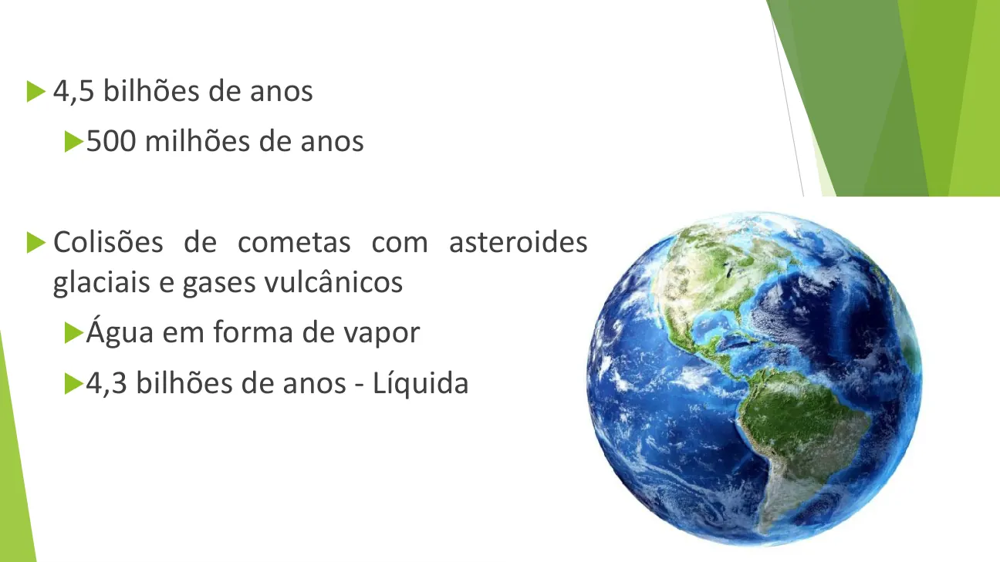
Imagem do PDF original · Aula 01, slide 2
💡 Curiosidade relacionada ao tópico: A busca por água líquida em outros planetas acontece porque toda forma de vida conhecida depende dela. Água, porém, não é prova de vida.
📌 Para lembrar: A água líquida foi uma condição importante para o aparecimento da vida na Terra.
📝 Agora é sua vez
2 atividades
Marque a alternativa e clique em Conferir alternativa. O feedback e a resolução aparecem imediatamente. Você também pode abrir o gabarito manualmente.
Autoral · estilo ENEM/vestibular · Questão 01
Questão 1. A busca por vida extraterrestre frequentemente envolve a investigação de regiões onde exista água líquida. Essa estratégia está relacionada à importância da água para os organismos terrestres. A principal propriedade da água que justifica essa busca é sua capacidade de:
🔽 Ver gabarito comentado
Gabarito: alternativa B. A água dissolve muitas substâncias e fornece um meio para inúmeras reações metabólicas. Sua presença, sozinha, não comprova vida.
Autoral · lista complementar · Questão 22
Questão 22. A presença de água líquida na Terra primitiva foi importante para o desenvolvimento das condições necessárias ao surgimento da vida. A formação dos oceanos esteve relacionada principalmente:
🔽 Ver gabarito comentado
Gabarito: alternativa B. O resfriamento permitiu a condensação do vapor e a presença de água líquida na superfície terrestre.
🌋
Hipóteses sobre a origem da vida
Aula 01 · Tópico 02
📖 Aula 01 · slides 3 e 4
Como substâncias químicas poderiam ter dado origem a sistemas vivos?
O que a ciência investiga?
A origem da vida ainda é um problema científico em investigação. Uma hipótese importante é a da evolução química: substâncias simples passaram por transformações capazes de produzir moléculas mais complexas e, posteriormente, sistemas com características próprias dos seres vivos.
É uma hipótese sobre uma sequência longa de processos, e não uma afirmação de que um animal apareceu de repente a partir de uma rocha. Os primeiros sistemas capazes de armazenar informações e manter reações internas poderiam ter surgido por etapas.
Fontes hidrotermais oceânicas
O material apresenta uma hipótese ligada às fontes hidrotermais, encontradas no fundo do oceano. Nelas, a água aquecida pelas rochas circula e carrega substâncias químicas, como hidrogênio (H₂), sulfeto de hidrogênio (H₂S) e minerais. Compartimentos em minerais poderiam ter concentrado moléculas e favorecido reações.
Observe que isso ainda é uma hipótese sobre a origem da vida, não a reprodução comprovada de cada uma de suas etapas.
Na vida real: existem microrganismos atuais que obtêm energia de substâncias químicas em ambientes profundos, mesmo sem luz do Sol.
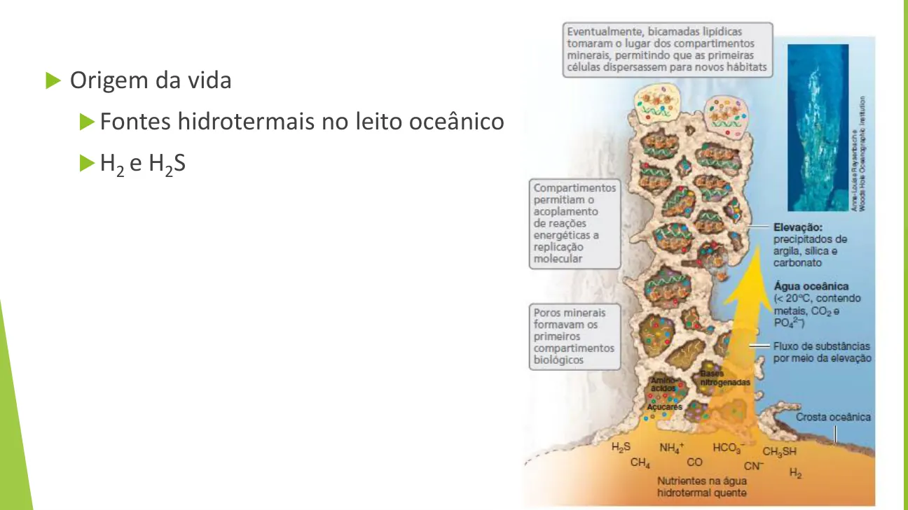
Imagem do PDF original · Aula 01, slide 4
💡 Curiosidade relacionada ao tópico: O fundo do oceano não é completamente sem vida: próximo a fontes hidrotermais, há comunidades que dependem de microrganismos produtores de matéria orgânica por processos químicos.
📌 Para lembrar: A origem da vida segue em estudo; fontes hidrotermais são uma hipótese científica relevante.
📝 Agora é sua vez
1 atividades
Marque a alternativa e clique em Conferir alternativa. O feedback e a resolução aparecem imediatamente. Você também pode abrir o gabarito manualmente.
Autoral · estilo ENEM/vestibular · Questão 02
Questão 2. Em regiões profundas dos oceanos, existem comunidades próximas a fontes hidrotermais, onde a luz solar não chega. Certos microrganismos produzem matéria orgânica usando energia de reações químicas. Esse processo é denominado:
🔽 Ver gabarito comentado
Gabarito: alternativa C. Na quimiossíntese, certos microrganismos obtêm energia de reações químicas para produzir compostos orgânicos. Esse é um exemplo atual associado ao ambiente hidrotermal estudado no slide.
🌿
Fotossíntese e oxigênio atmosférico
Aula 01 · Tópico 03
📖 Aula 01 · slide 5
A atmosfera da Terra mudou muito desde o aparecimento dos primeiros organismos.
O que é fotossíntese?
É um processo em que organismos fotossintetizantes captam energia da luz para produzir compostos orgânicos. Na fotossíntese oxigênica, a água participa das reações e há liberação de oxigênio (O₂).
6 CO₂ + 6 H₂O + luz → C₆H₁₂O₆ + 6 O₂
Essa equação é uma representação global simplificada. Os organismos não passam diretamente de todas essas substâncias para o produto em uma única reação.
Por que o oxigênio começou a se acumular?
Cianobactérias e outros organismos fotossintetizantes liberaram oxigênio ao longo de muito tempo. Inicialmente, grande parte do gás reagia com materiais presentes nos oceanos e nas rochas. Depois, mais oxigênio passou a se acumular na atmosfera.
Há aproximadamente 2,4 bilhões de anos ocorreu o Grande Evento de Oxidação. A mudança permitiu a expansão de formas de metabolismo que utilizam oxigênio, mas representou um desafio para organismos intolerantes a esse gás.
Na vida real: o oxigênio que você utiliza hoje na respiração é constantemente reposto, em grande parte, por organismos fotossintetizantes terrestres e aquáticos.
💡 Curiosidade relacionada ao tópico: As cianobactérias já realizavam fotossíntese muito antes de existirem árvores ou plantas com flores.
📌 Para lembrar: A fotossíntese alterou a composição da atmosfera e influenciou a evolução da vida.
📝 Agora é sua vez
2 atividades
Marque a alternativa e clique em Conferir alternativa. O feedback e a resolução aparecem imediatamente. Você também pode abrir o gabarito manualmente.
Autoral · estilo ENEM/vestibular · Questão 03
Questão 3. O aumento do oxigênio atmosférico provocado por organismos fotossintetizantes favoreceu, posteriormente:
🔽 Ver gabarito comentado
Gabarito: alternativa C. A respiração aeróbica utiliza O₂ como aceptor final de elétrons e sustenta uma importante forma de produção de ATP.
Autoral · lista complementar · Questão 23
Questão 23. O desenvolvimento da fotossíntese oxigênica contribuiu para modificar a composição atmosférica. O grupo de organismos diretamente relacionado a esse processo na Terra primitiva é:
🔽 Ver gabarito comentado
Gabarito: alternativa C. As cianobactérias realizavam fotossíntese oxigênica antes do aparecimento das plantas terrestres.
🔬
O que é célula? Procariontes e eucariontes
Aula 01 · Tópico 04
📖 Aula 01 · slides 6 a 12; Aula 02 · slides 2 e 3
Todos os organismos celulares dependem dessa unidade básica de organização.
O que estudamos em citologia?
Citologia é a área da Biologia que estuda as células. Uma célula é a menor unidade estrutural e funcional dos organismos celulares. Alguns seres vivos possuem apenas uma célula (unicelulares); outros são formados por muitas células (pluricelulares).
Em 1665, Robert Hooke observou pequenos compartimentos em um pedaço de cortiça com um microscópio e utilizou o termo “células”. Mais tarde, Schleiden e Schwann ajudaram a estabelecer a teoria celular, que reconhece a célula como unidade fundamental dos seres vivos.
Qual é a principal diferença entre os dois tipos de célula?
Característica
Procariótica
Eucariótica
Núcleo delimitado por membrana
Não
Sim
DNA
Em geral, circular, na região do nucleoide
Grande parte em cromossomos lineares no núcleo
Organelas membranosas
Ausentes
Presentes
Ribossomos
Presentes
Presentes
Exemplos
Bactérias e arqueias
Animais, vegetais, fungos e protistas
De onde vieram mitocôndrias e cloroplastos?
A teoria endossimbiótica propõe que ancestrais dessas organelas eram bactérias que passaram a viver dentro de outras células ancestrais. Uma das evidências é que apresentam DNA próprio e ribossomos.
Na vida real: as bactérias presentes no iogurte são organismos procariontes; as células do seu intestino são eucariontes. Ambas produzem proteínas por meio de ribossomos.
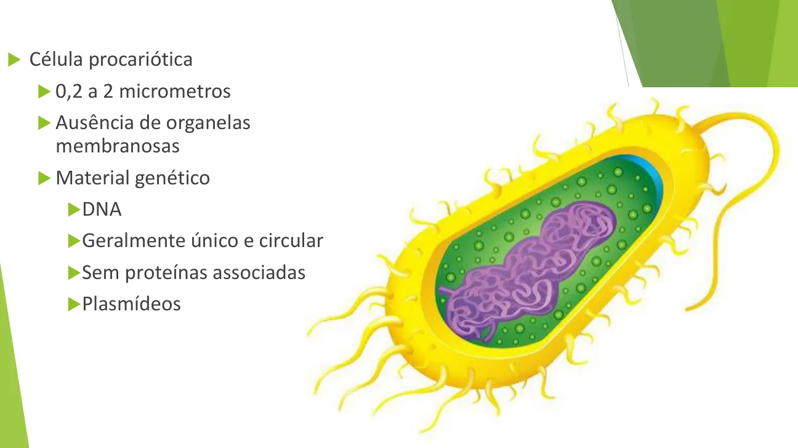
Imagem do PDF original · Aula 01, slide 7
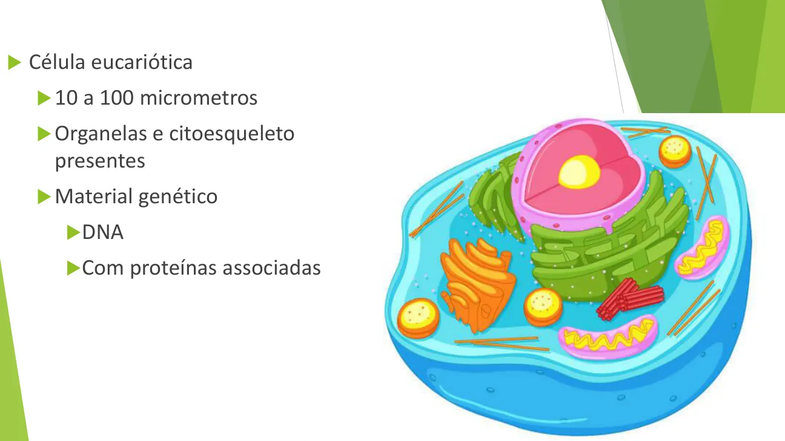
Imagem do PDF original · Aula 01, slide 8
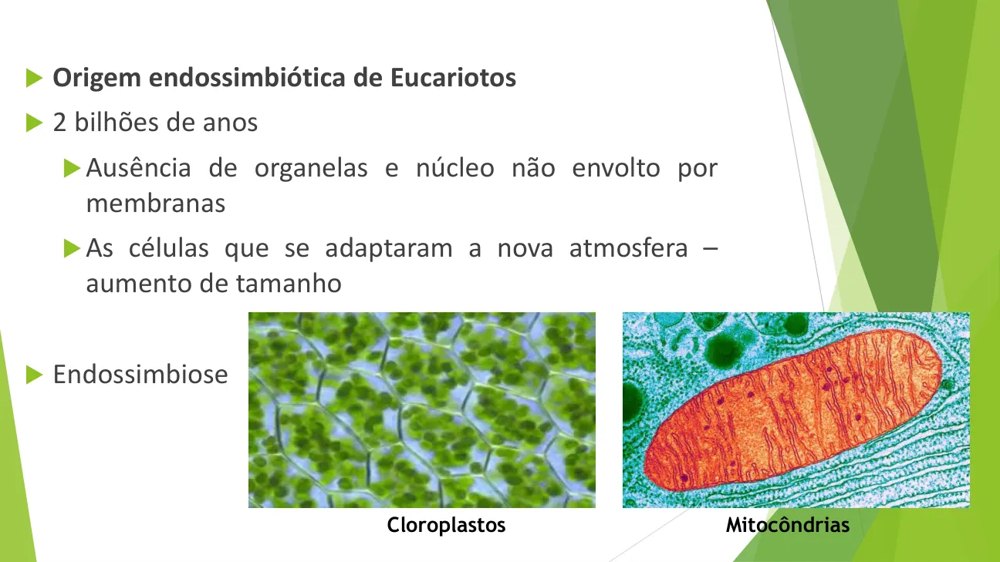
Imagem do PDF original · Aula 01, slide 6
💡 Curiosidade relacionada ao tópico: Mitocôndrias possuem parte de seu material genético separada do DNA nuclear, uma pista da antiga associação endossimbiótica.
📌 Para lembrar: Procariontes não possuem núcleo membranoso; eucariontes possuem.
📝 Agora é sua vez
3 atividades
Marque a alternativa e clique em Conferir alternativa. O feedback e a resolução aparecem imediatamente. Você também pode abrir o gabarito manualmente.
Autoral · estilo ENEM/vestibular · Questão 04
Questão 4. Pesquisadores identificaram uma estrutura de uma célula humana que apresenta DNA próprio, ribossomos e capacidade de divisão, características relacionadas à sua origem evolutiva. Essa estrutura é a:
🔽 Ver gabarito comentado
Gabarito: alternativa B. Mitocôndrias possuem DNA e ribossomos próprios, características que apoiam a teoria endossimbiótica.
Autoral · lista complementar · Questão 24
Questão 24. Uma pesquisadora identificou uma organela com DNA próprio e características associadas à origem bacteriana. A organela identificada pode ser:
🔽 Ver gabarito comentado
Gabarito: alternativa C. Mitocôndrias apresentam DNA próprio, uma evidência da origem endossimbiótica.
Autoral · lista complementar · Questão 25
Questão 25. Uma bactéria apresenta material genético e capacidade de produzir proteínas, mesmo sem núcleo delimitado por membrana. Qual estrutura participa diretamente dessa produção?
🔽 Ver gabarito comentado
Gabarito: alternativa D. Ribossomos sintetizam proteínas e existem em células procarióticas e eucarióticas.
🚪
Membrana plasmática: entrada e saída
Aula 01 · Tópico 05
📖 Aula 01 · slides 12 a 15
A membrana é a fronteira dinâmica que controla trocas com o ambiente.
Do que ela é feita?
A membrana plasmática contém principalmente uma bicamada de fosfolipídios com proteínas associadas. Ela não é uma parede totalmente fechada: possui permeabilidade seletiva, isto é, algumas substâncias atravessam mais facilmente do que outras.
Transporte passivo
Ocorre sem gasto direto de energia metabólica para transportar substâncias a favor do gradiente. Exemplos: difusão simples, difusão facilitada e osmose.
Na osmose, a água se desloca através de uma membrana seletivamente permeável. Quando o meio externo está muito concentrado em solutos, a célula pode perder água.
Transporte ativo
É o transporte que utiliza energia direta ou indiretamente para deslocar substâncias contra seu gradiente. A bomba de sódio e potássio é um exemplo clássico, importante para a atividade elétrica de células nervosas e musculares.
Meio externo
Tendência em célula animal
Hipotônico
Água entra; a célula pode inchar
Isotônico
Não há fluxo líquido de água
Hipertônico
Água sai; a célula tende a murchar
Na vida real: uma salada temperada com muito sal perde água e murcha; o soro fisiológico de 0,9% é aproximadamente isotônico em relação ao plasma sanguíneo.
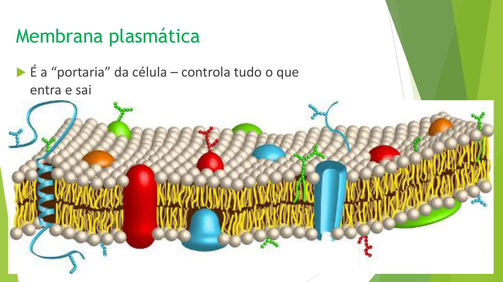
Imagem do PDF original · Aula 01, slide 13
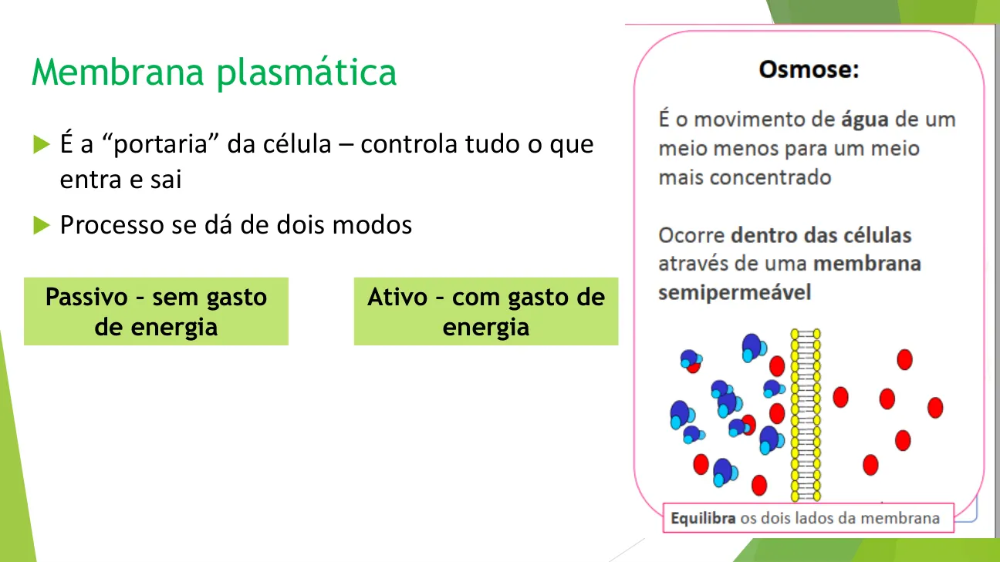
Imagem do PDF original · Aula 01, slide 14
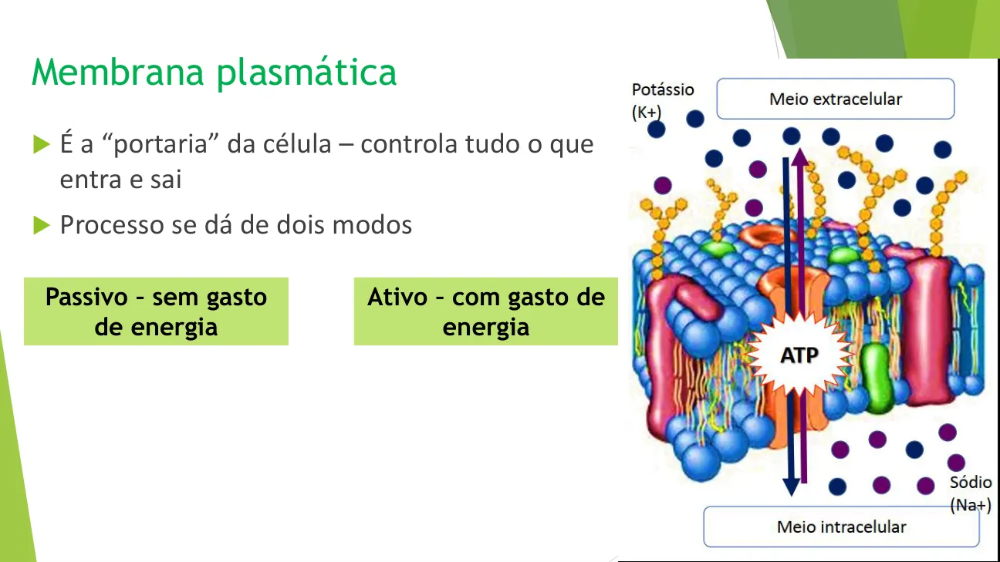
Imagem do PDF original · Aula 01, slide 15
💡 Curiosidade relacionada ao tópico: A alface murcha com o sal porque a água tende a sair de suas células; a parede celular permanece, mas a pressão de turgor diminui.
📌 Para lembrar: Passivo: sem gasto direto de ATP a favor do gradiente. Ativo: utiliza energia para transportar contra o gradiente.
📝 Agora é sua vez
2 atividades
Marque a alternativa e clique em Conferir alternativa. O feedback e a resolução aparecem imediatamente. Você também pode abrir o gabarito manualmente.
Autoral · estilo ENEM/vestibular · Questão 05
Questão 5. Uma pessoa colocou folhas de alface em uma solução muito concentrada de sal. Após algum tempo, observou que as folhas perderam firmeza. A principal explicação é:
🔽 Ver gabarito comentado
Gabarito: alternativa C. A solução externa hipertônica favorece a saída de água, reduzindo a turgescência das células vegetais.
Autoral · lista complementar · Questão 26
Questão 26. Uma célula foi colocada em um meio mais concentrado em solutos do que seu interior. Após algum tempo, seu volume diminuiu. O processo responsável é:
🔽 Ver gabarito comentado
Gabarito: alternativa B. Em meio hipertônico, a água tende a sair da célula por osmose.
🏭
Citoplasma e organelas celulares
Aula 01 · Tópico 06
📖 Aula 01 · slides 16 e 17
Vamos enxergar as organelas como setores de uma fábrica que precisa funcionar sem parar.
O que existe dentro da célula?
O citoplasma compreende o citosol e estruturas internas, incluindo as organelas. Diversas reações químicas acontecem nessa região. Nas células eucarióticas, as organelas exercem funções específicas.
Estrutura
Principal função
Comparação
Ribossomos
Síntese de proteínas
Máquinas de montagem
Retículo endoplasmático rugoso
Síntese/processamento de muitas proteínas
Linha de produção
Retículo endoplasmático liso
Produção de lipídios e outras funções
Setor químico
Complexo de Golgi
Modificação, empacotamento e distribuição
Centro de distribuição
Lisossomos
Digestão intracelular
Reciclagem
Mitocôndrias
Produção de ATP pela respiração aeróbica
Central de energia
Cloroplastos
Fotossíntese em vegetais e algas
Captação de energia luminosa
Vacúolos
Armazenamento e controle hídrico
Reservatório
Centríolos
Organização de microtúbulos em muitas células
Organização estrutural
Célula animal e vegetal
A célula vegetal típica apresenta parede celular, cloroplastos em tecidos fotossintetizantes e um grande vacúolo. A parede oferece sustentação e proteção; ela não substitui a membrana plasmática.
A célula animal não possui parede celular nem cloroplastos. Ambas as células são eucarióticas e possuem mitocôndrias.
Na vida real: células musculares podem ter muitas mitocôndrias porque precisam produzir bastante ATP; células que secretam proteínas apresentam retículo rugoso e Golgi desenvolvidos.
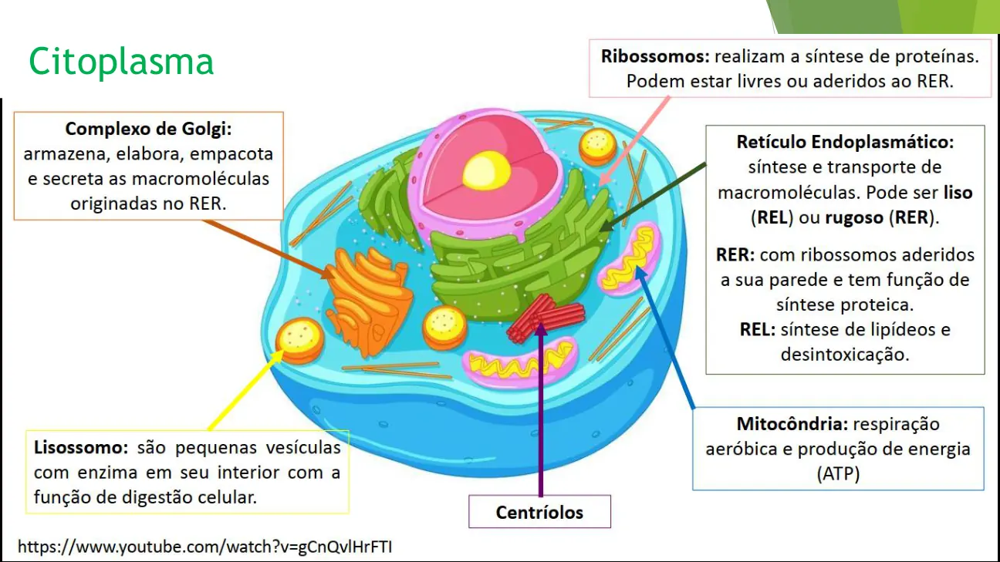
Imagem do PDF original · Aula 01, slide 16
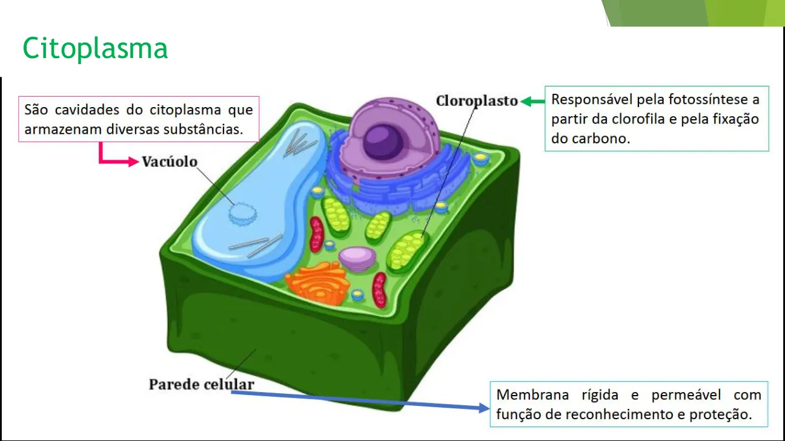
Imagem do PDF original · Aula 01, slide 17
💡 Curiosidade relacionada ao tópico: A bile e as enzimas digestivas são produzidas e liberadas por células especializadas que dependem de organelas para sintetizar e secretar substâncias.
📌 Para lembrar: Não confunda ribossomos (proteínas), mitocôndrias (ATP) e cloroplastos (fotossíntese).
📝 Agora é sua vez
2 atividades
Marque a alternativa e clique em Conferir alternativa. O feedback e a resolução aparecem imediatamente. Você também pode abrir o gabarito manualmente.
Autoral · estilo ENEM/vestibular · Questão 06
Questão 6. Uma célula glandular produz e secreta grandes quantidades de proteínas. Quais estruturas estão especialmente relacionadas à síntese, ao processamento e à secreção dessas moléculas?
🔽 Ver gabarito comentado
Gabarito: alternativa B. Ribossomos sintetizam proteínas; o retículo rugoso participa de sua produção e o Golgi, de seu processamento e encaminhamento.
Autoral · lista complementar · Questão 27
Questão 27. Uma célula apresenta intensa produção de proteínas destinadas à secreção. As estruturas mais diretamente relacionadas são:
🔽 Ver gabarito comentado
Gabarito: alternativa A. A produção e a secreção de muitas proteínas dependem dos ribossomos, retículo rugoso e Golgi.
🧬
Núcleo, DNA, genes e cromossomos
Aula 01 · Tópico 07
📖 Aula 01 · slides 18 a 22
Como as células guardam e consultam informações para funcionar?
O que são DNA, gene e cromossomo?
O DNA é uma molécula que armazena informações genéticas. É formado por nucleotídeos com bases nitrogenadas A, T, C e G. Um gene é um trecho de DNA que contém informação para produzir um RNA funcional e, em muitos casos, uma proteína. Os cromossomos organizam moléculas de DNA associadas a proteínas.
Nas células eucarióticas, a maior parte do DNA está no núcleo. Nas procarióticas, o DNA fica na região do nucleoide. O núcleo também participa do controle celular ao regular a expressão genética.
Como a informação do DNA é utilizada?
DNATranscrição →RNA mensageiroTradução →Proteína
Na transcrição, uma região do DNA serve de molde para a produção de RNA. Na tradução, os ribossomos usam a informação do RNA mensageiro para montar a sequência de aminoácidos de uma proteína. O RNA utiliza uracila (U) no lugar da timina (T).
Genótipo é a constituição genética considerada; fenótipo é a característica observável ou mensurável produzida pela interação entre genes e ambiente.
Na vida real: a produção de lactase, enzima digestiva da lactose, depende da atividade de genes e de sua regulação. A capacidade de digerir lactose pode variar entre adultos.
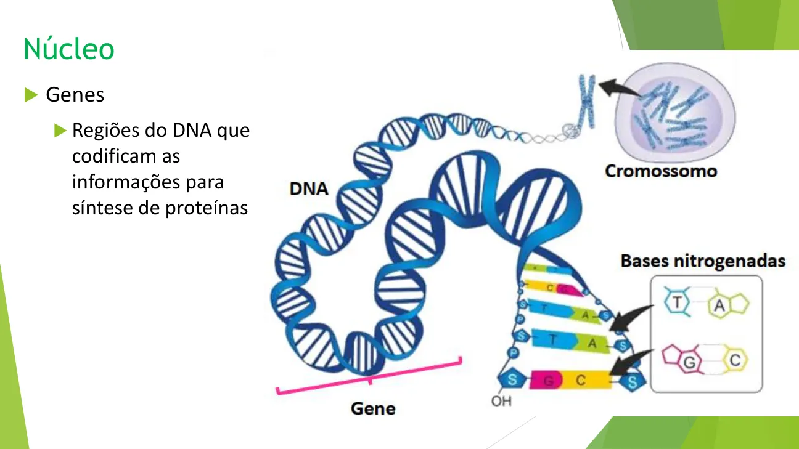
Imagem do PDF original · Aula 01, slide 19
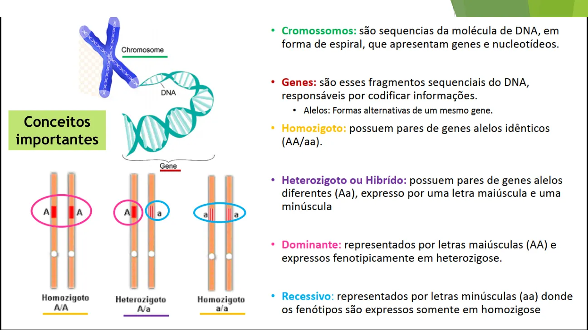
Imagem do PDF original · Aula 01, slide 21
💡 Curiosidade relacionada ao tópico: O DNA não precisa sair inteiro do núcleo para informar a produção de proteínas: o RNA mensageiro pode transportar essa informação até os ribossomos.
📌 Para lembrar: DNA armazena informações; genes são seus trechos funcionais; cromossomos organizam o material genético.
📝 Agora é sua vez
1 atividades
Marque a alternativa e clique em Conferir alternativa. O feedback e a resolução aparecem imediatamente. Você também pode abrir o gabarito manualmente.
Autoral · estilo ENEM/vestibular · Questão 07
Questão 7. Uma alteração na sequência do DNA de um gene pode modificar a estrutura de uma proteína produzida pela célula. Isso ocorre porque a informação genética pode determinar:
🔽 Ver gabarito comentado
Gabarito: alternativa A. O RNA mensageiro pode levar a informação codificada no DNA até os ribossomos, onde é traduzida em uma sequência de aminoácidos.
🟡
Alelos e Primeira Lei de Mendel
Aula 01 · Tópico 08
📖 Aula 01 · slides 21 a 24
Por que uma característica pode reaparecer nos descendentes mesmo quando não aparece nos pais?
Vocabulário indispensável
Alelos são versões de um mesmo gene. Para muitos genes nucleares, um indivíduo diploide apresenta dois alelos: um herdado de cada genitor.
Termo
Exemplo
Ideia
Homozigoto
AA ou aa
Dois alelos iguais
Heterozigoto
Aa
Dois alelos diferentes
Dominante (modelo simples)
A
Manifesta seu efeito no heterozigoto
Recessivo (modelo simples)
a
Fica mascarado em Aa
1ª Lei — segregação dos fatores
Os dois alelos de um gene se separam na formação dos gametas. Assim, o indivíduo Aa pode formar gametas contendo A ou a, nunca os dois juntos no mesmo gameta normal.
Exemplo: Aa × Aa
×AaAAAAaaAaaa
Proporção de genótipos: 1 AA : 2 Aa : 1 aa. Em dominância completa, proporção de fenótipos: 3 dominantes : 1 recessivo.
Dominância incompleta e genes letais
Na dominância incompleta, o heterozigoto apresenta fenótipo intermediário: por exemplo, vermelho × branco pode produzir rosa. Alguns alelos letais, em combinações específicas, reduzem a sobrevivência, alterando as proporções observadas.
Na vida real: o quadro de Punnett calcula probabilidades, não garante que quatro filhos nascerão obrigatoriamente na proporção exata de 3 para 1.
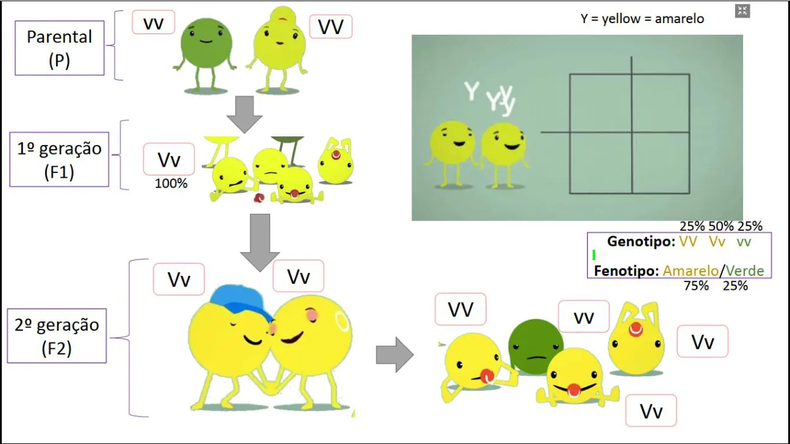
Imagem do PDF original · Aula 01, slide 23
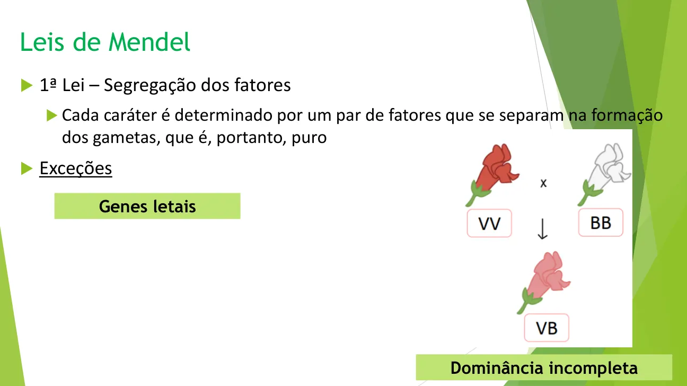
Imagem do PDF original · Aula 01, slide 24
💡 Curiosidade relacionada ao tópico: A palavra dominante não significa “melhor”, “mais forte” ou “mais frequente”: descreve um padrão de expressão do alelo em um modelo genético.
📌 Para lembrar: Para resolver cruzamentos, descubra os gametas de cada genitor e depois combine-os.
📝 Agora é sua vez
2 atividades
Marque a alternativa e clique em Conferir alternativa. O feedback e a resolução aparecem imediatamente. Você também pode abrir o gabarito manualmente.
Autoral · estilo ENEM/vestibular · Questão 08
Questão 8. Em uma espécie de planta, flores vermelhas e brancas apresentam dominância incompleta. O cruzamento de duas plantas de flores rosas (VB × VB) produzirá, em média:
🔽 Ver gabarito comentado
Gabarito: alternativa D. VB × VB forma VV, VB, VB e BB. Na dominância incompleta, isso corresponde a 1 vermelha : 2 rosas : 1 branca.
Autoral · lista complementar · Questão 28
Questão 28. Em uma espécie vegetal, a cor amarela das sementes é dominante sobre a verde. O cruzamento Aa × Aa produzirá teoricamente qual proporção de sementes verdes?
🔽 Ver gabarito comentado
Gabarito: alternativa B. O cruzamento gera AA, Aa, Aa e aa; só aa é verde. Assim, 1/4 = 25%.
🎲
Segunda Lei de Mendel
Aula 01 · Tópico 09
📖 Aula 01 · slide 25
Agora vamos acompanhar dois pares de alelos ao mesmo tempo.
O que a 2ª Lei diz?
Em determinadas condições, alelos de genes diferentes se distribuem independentemente na formação dos gametas. Para um indivíduo AaBb, com genes que segregam independentemente, os gametas possíveis são AB, Ab, aB e ab.
ABAbaBab
No cruzamento AaBb × AaBb, considerando dominância completa e segregação independente, a proporção fenotípica clássica é 9 : 3 : 3 : 1.
Atenção: isso não vale igualmente para todos os pares de genes. Genes ligados no mesmo cromossomo podem não apresentar segregação independente na proporção prevista.
Na vida real: a combinação de características herdadas ajuda a explicar por que irmãos podem apresentar conjuntos diferentes de traços, mesmo tendo os mesmos pais.
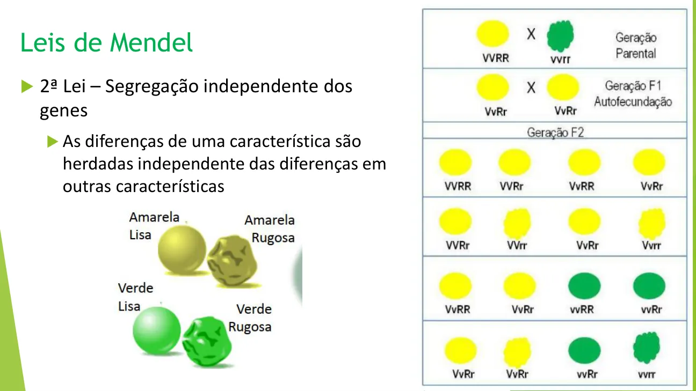
Imagem do PDF original · Aula 01, slide 25
💡 Curiosidade relacionada ao tópico: As proporções 3:1 e 9:3:3:1 são modelos probabilísticos para condições bem definidas — não regras universais para todas as características humanas.
📌 Para lembrar: 1ª Lei: separam-se os alelos do mesmo gene. 2ª Lei: pares de genes podem segregar independentemente.
📝 Agora é sua vez
2 atividades
Marque a alternativa e clique em Conferir alternativa. O feedback e a resolução aparecem imediatamente. Você também pode abrir o gabarito manualmente.
Autoral · lista complementar · Questão 29
Questão 29. Um indivíduo com genótipo AaBb apresenta dois pares de genes que segregam independentemente. Quais gametas podem ser formados?
🔽 Ver gabarito comentado
Gabarito: alternativa D. Cada gameta recebe um alelo de cada gene. As quatro combinações são AB, Ab, aB e ab.
Autoral · fixação adicional · Questão 49
Questão 49. Em um cruzamento AaBb × AaBb, com segregação independente e dominância completa nos dois genes, a razão fenotípica esperada é:
🔽 Ver gabarito comentado
Gabarito: alternativa C. Cada progenitor forma AB, Ab, aB e ab. O quadro de 16 combinações resulta, nessas condições, na razão fenotípica 9:3:3:1.
🩸
Grupos sanguíneos: ABO e fator Rh
Aula 01 · Tópico 10
📖 Aula 01 · slides 26 e 27
Por que não é seguro receber sangue de qualquer grupo?
Sistema ABO
As hemácias podem apresentar antígenos A e/ou B na superfície. O plasma pode conter anticorpos capazes de reagir com antígenos que a pessoa não apresenta. Uma transfusão incompatível pode provocar reação grave.
Grupo
Antígenos nas hemácias
Anticorpos no plasma
A
A
Anti-B
B
B
Anti-A
AB
A e B
Não apresenta anti-A nem anti-B naturais
O
Não apresenta A nem B
Anti-A e anti-B
Fator Rh
Na abordagem escolar, Rh positivo significa presença do antígeno D e Rh negativo significa ausência dele. O sistema Rh tem importância em transfusões e na gestação.
Eritroblastose fetal
Uma gestante Rh negativa que tenha sido sensibilizada pode produzir anticorpos capazes de atravessar a placenta e destruir hemácias fetais Rh positivas. Isso pode causar doença hemolítica do feto e do recém-nascido. A imunoglobulina anti-D pode prevenir a sensibilização em situações indicadas.
Na vida real: o tipo sanguíneo não pode ser escolhido apenas por semelhança familiar. Em transfusões reais são realizados exames de compatibilidade e avaliação de outros antígenos.
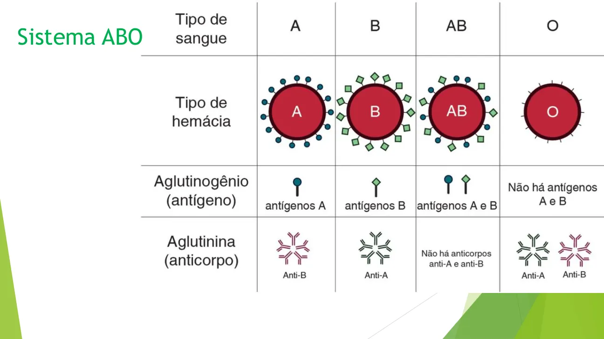
Imagem do PDF original · Aula 01, slide 27
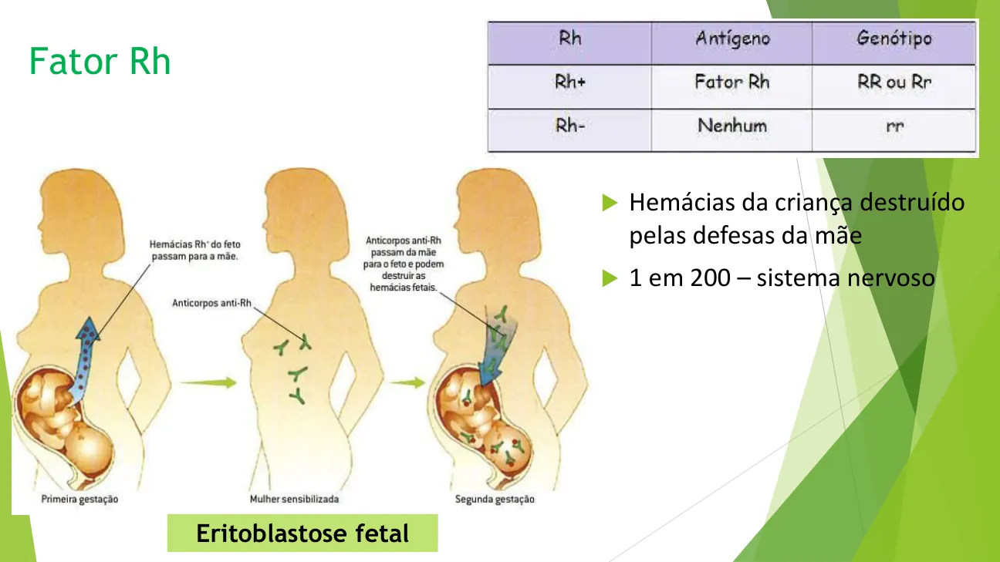
Imagem do PDF original · Aula 01, slide 26
💡 Curiosidade relacionada ao tópico: O tipo O negativo é frequentemente utilizado em emergências para concentrados de hemácias, mas isso não significa que qualquer transfusão seja dispensada de testes e cuidados.
📌 Para lembrar: Compatibilidade sanguínea envolve antígenos das hemácias e anticorpos do receptor.
📝 Agora é sua vez
2 atividades
Marque a alternativa e clique em Conferir alternativa. O feedback e a resolução aparecem imediatamente. Você também pode abrir o gabarito manualmente.
Autoral · estilo ENEM/vestibular · Questão 09
Questão 9. Uma pessoa possui sangue do grupo A e fator Rh positivo. Considerando apenas ABO e Rh, qual tipo é compatível para transfusão de concentrado de hemácias?
🔽 Ver gabarito comentado
Gabarito: alternativa C. Hemácias O negativas não apresentam os antígenos A, B ou D. Transfusões reais, porém, requerem avaliação clínica e testes de compatibilidade.
Autoral · lista complementar · Questão 30
Questão 30. Uma pessoa de sangue tipo AB apresenta, na superfície de suas hemácias:
🔽 Ver gabarito comentado
Gabarito: alternativa C. As hemácias do grupo AB exibem ambos os antígenos A e B.
👁️
Cromossomos sexuais, daltonismo e calvície
Aula 01 · Tópico 11
📖 Aula 01 · slides 28 a 30
Algumas características estão ligadas aos cromossomos sexuais; outras têm expressão influenciada por hormônios.
Cromossomos sexuais
Nas configurações cromossômicas humanas mais comuns, indivíduos XX possuem dois cromossomos X, enquanto indivíduos XY possuem X e Y. Algumas características são influenciadas por genes localizados no cromossomo X.
Daltonismo recessivo ligado ao X
Uma pessoa XY possui uma única cópia do cromossomo X. Se ela tiver uma variante recessiva associada a determinada deficiência da visão de cores nesse cromossomo, poderá manifestá-la. Uma pessoa XX heterozigota pode ser portadora sem apresentar a condição no modelo escolar.
Exemplo: mãe XᴰXᵈ e pai XᴰY. Cada filho do sexo masculino tem, nesse modelo, 50% de probabilidade de herdar Xᵈ da mãe.
Calvície no slide
O material utiliza um modelo simplificado de herança influenciada pelo sexo para explicar a calvície. Na realidade, a calvície androgenética humana é uma característica complexa e poligênica, influenciada por hormônios; não é adequadamente prevista por um único par de letras.
Na vida real: a deficiência da visão de cores não implica necessariamente enxergar apenas em preto e branco; as alterações mais frequentes dificultam distinguir determinadas tonalidades.
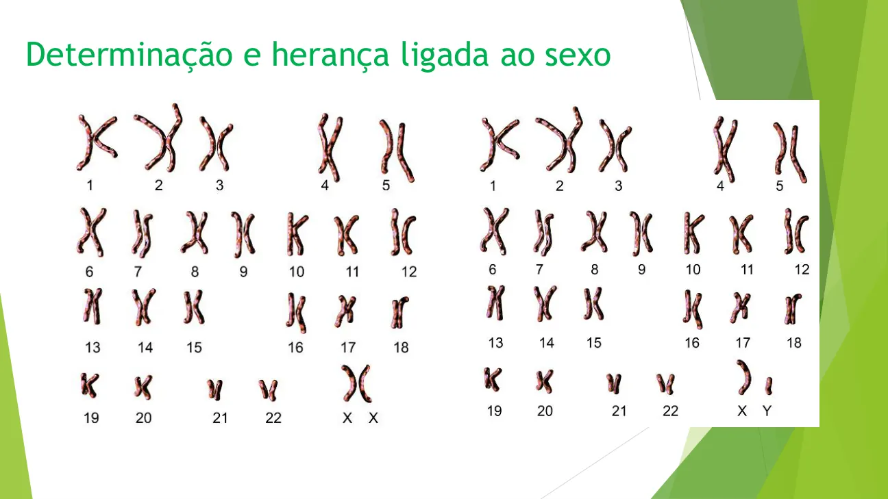
Imagem do PDF original · Aula 01, slide 28
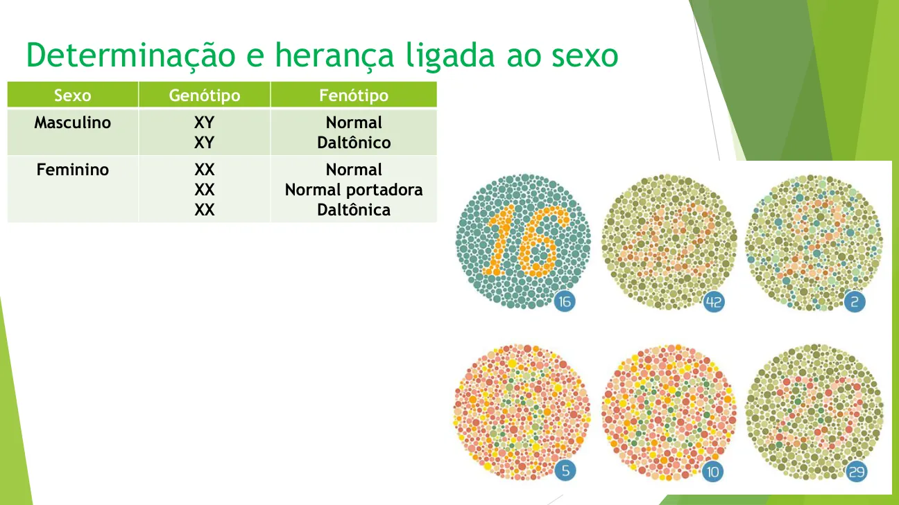
Imagem do PDF original · Aula 01, slide 30
💡 Curiosidade relacionada ao tópico: Em heredogramas, a ausência de transmissão direta de pai para filho pode ser uma pista de herança ligada ao X, mas é preciso examinar toda a família.
📌 Para lembrar: Em herança recessiva ligada ao X, um filho XY recebe o X da mãe e o Y do pai.
📝 Agora é sua vez
2 atividades
Marque a alternativa e clique em Conferir alternativa. O feedback e a resolução aparecem imediatamente. Você também pode abrir o gabarito manualmente.
Autoral · estilo ENEM/vestibular · Questão 10
Questão 10. Uma mulher portadora de uma condição recessiva ligada ao cromossomo X, sem manifestá-la, tem filhos com um homem não afetado. Qual é a probabilidade de um filho do sexo masculino apresentar a condição, no modelo mendeliano?
🔽 Ver gabarito comentado
Gabarito: alternativa C. O filho XY recebe o Y do pai e um dos dois X da mãe. A mãe tem 50% de chance de transmitir o X com o alelo recessivo.
Autoral · lista complementar · Questão 31
Questão 31. Uma mulher heterozigota para um alelo recessivo ligado ao cromossomo X tem filhos com um homem não afetado. Qual é a probabilidade de uma filha receber da mãe o alelo recessivo?
🔽 Ver gabarito comentado
Gabarito: alternativa C. Cada filha recebe um dos dois cromossomos X maternos. Um deles contém o alelo recessivo: probabilidade de 50%.
🌳
Heredogramas: lendo uma família
Aula 01 · Tópico 12
📖 Aula 01 · slide 31
Aprenda a interpretar um desenho genético sem precisar decorar todas as situações.
Para que serve um heredograma?
É um esquema que representa relações de parentesco e como uma característica aparece nas diferentes gerações.
Quadrado: indivíduo masculino.
Círculo: indivíduo feminino.
Símbolo preenchido: apresenta a característica analisada.
Linha horizontal: união parental.
Linha vertical: ligação com descendentes.
Algarismos romanos: gerações (I, II, III...).
Como resolver exercícios?
Identifique se a característica aparece em todas as gerações ou se “salta” gerações.
Veja se pais sem a característica tiveram filhos que a manifestam.
Compare a frequência entre indivíduos masculinos e femininos.
Monte genótipos possíveis e verifique se todas as pessoas se encaixam.
Na vida real: profissionais utilizam árvores familiares para investigar padrões de doenças hereditárias, sempre considerando que muitas condições não seguem modelos mendelianos simples.
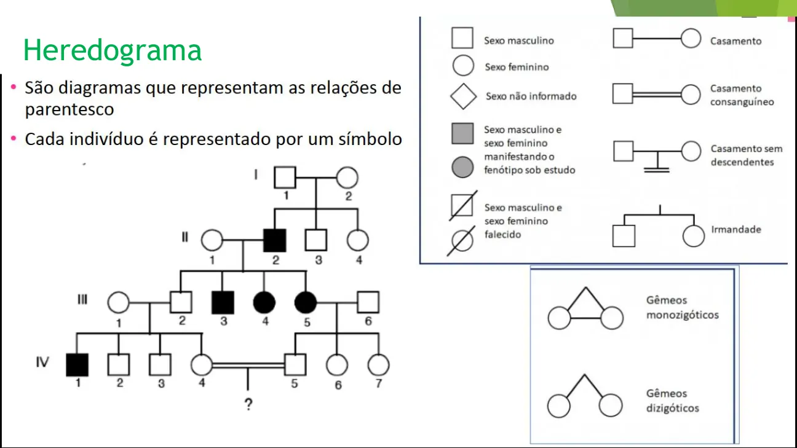
Imagem do PDF original · Aula 01, slide 31
💡 Curiosidade relacionada ao tópico: Um casal sem determinada característica que tem um filho que a manifesta pode sugerir herança recessiva, desde que outras explicações tenham sido consideradas.
📌 Para lembrar: Primeiro leia os símbolos e as gerações; depois formule hipóteses sobre a herança.
📝 Agora é sua vez
2 atividades
Marque a alternativa e clique em Conferir alternativa. O feedback e a resolução aparecem imediatamente. Você também pode abrir o gabarito manualmente.
Autoral · fixação adicional · Questão 50
Questão 50. Em um heredograma, um casal que não manifesta uma característica tem um filho que a manifesta. Em um modelo simples, esse resultado é compatível com:
🔽 Ver gabarito comentado
Gabarito: alternativa A. Se ambos os pais são Aa para um alelo recessivo, podem ter um descendente aa que manifesta a característica.
Autoral · fixação adicional · Questão 51
Questão 51. Na representação convencional de heredogramas, um círculo preenchido indica:
🔽 Ver gabarito comentado
Gabarito: alternativa B. Círculos representam indivíduos femininos e o preenchimento indica manifestação da característica analisada.
🧪
Biotecnologia no cotidiano
Aula 01 · Tópico 13
📖 Aula 01 · slide 32
Uma aplicação da Biologia capaz de transformar alimentos, medicamentos e tecnologias.
O que significa biotecnologia?
É a utilização de organismos vivos, células ou componentes biológicos para produzir ou modificar produtos e processos úteis à sociedade.
Exemplos presentes no slide
Antibióticos: alguns são originalmente produzidos por microrganismos.
Vacinas: estimulam mecanismos de proteção imunológica.
Transgênicos: organismos cujo material genético foi modificado por técnicas de engenharia genética.
Clonagem: produção de cópias geneticamente semelhantes, conforme a técnica utilizada.
Reprodução in vitro: técnicas laboratoriais podem auxiliar processos de reprodução.
Uma aplicação importante da engenharia genética é a produção de insulina humana em microrganismos que recebem instruções genéticas para fabricar a proteína.
Na vida real: o fermento biológico usado no pão contém leveduras, que liberam CO₂ e ajudam a massa a crescer.
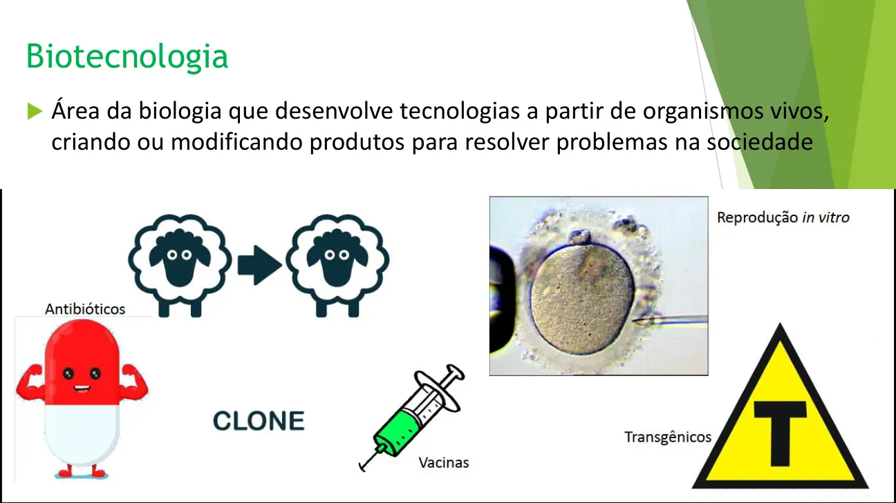
Imagem do PDF original · Aula 01, slide 32
💡 Curiosidade relacionada ao tópico: A insulina humana para uso médico pode ser produzida com bactérias ou leveduras modificadas geneticamente.
📌 Para lembrar: Biotecnologia transforma conhecimento sobre seres vivos em soluções práticas.
📝 Agora é sua vez
1 atividades
Marque a alternativa e clique em Conferir alternativa. O feedback e a resolução aparecem imediatamente. Você também pode abrir o gabarito manualmente.
Autoral · estilo ENEM/vestibular · Questão 11
Questão 11. Uma indústria farmacêutica introduziu em bactérias uma sequência de DNA que permite a produção de uma proteína humana de uso médico. A técnica está relacionada à:
🔽 Ver gabarito comentado
Gabarito: alternativa B. A engenharia genética permite introduzir instruções genéticas em microrganismos para produzir proteínas terapêuticas.
🫀
Aula 02 — Organização E Fisiologia Humana
Início do módulo
Você vai encontrar as explicações, exemplos e questões de todos os temas deste módulo. Use o sumário para ir diretamente ao que deseja revisar.
🧩
Níveis de organização do corpo
Aula 02 · Tópico 14
📖 Aula 02 · slides 2 a 4
Como bilhões de estruturas pequenas conseguem formar um único organismo?
A organização biológica apresenta níveis que se relacionam. Não são objetos isolados, mas partes de sistemas cada vez mais complexos.
Tecido é um conjunto organizado de células e componentes extracelulares com funções relacionadas. Um órgão é constituído por diferentes tecidos. Um sistema reúne órgãos que atuam de modo integrado.
Exemplo: células musculares cardíacas formam tecido muscular, que constitui parte do coração; o coração faz parte do sistema cardiovascular.
Na vida real: o sangue é considerado tecido conjuntivo especializado, apesar de ser líquido.
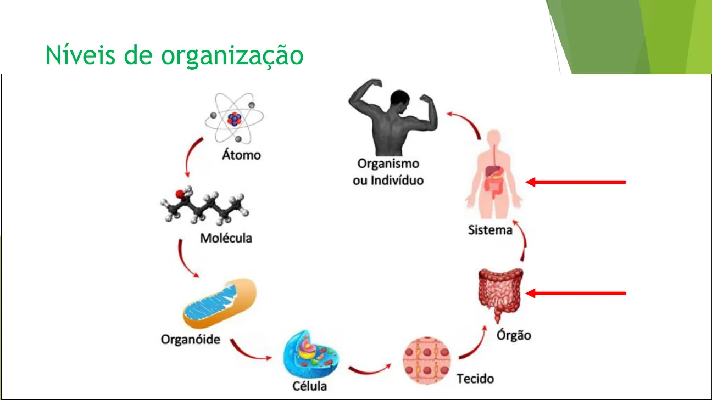
Imagem do PDF original · Aula 02, slide 4
💡 Curiosidade relacionada ao tópico: Um mesmo órgão contém mais de um tecido: no intestino, por exemplo, há tecidos epiteliais, musculares, conjuntivos e nervosos.
📌 Para lembrar: Células formam tecidos; tecidos formam órgãos; órgãos integram sistemas.
📝 Agora é sua vez
2 atividades
Marque a alternativa e clique em Conferir alternativa. O feedback e a resolução aparecem imediatamente. Você também pode abrir o gabarito manualmente.
Autoral · estilo ENEM/vestibular · Questão 12
Questão 12. O coração é formado por diferentes tecidos que trabalham de maneira integrada. Na organização biológica, o coração é classificado como:
🔽 Ver gabarito comentado
Gabarito: alternativa D. Órgãos são formados por diferentes tecidos organizados para desempenhar funções específicas.
Autoral · lista complementar · Questão 32
Questão 32. O sistema digestório humano apresenta órgãos constituídos por diferentes tecidos. Qual sequência de organização está correta?
🔽 Ver gabarito comentado
Gabarito: alternativa B. Células constituem tecidos, que constituem órgãos, que integram sistemas, que formam um organismo.
🍽️
Nutrição e sistema digestório
Aula 02 · Tópico 15
📖 Aula 02 · slides 5 e 6
O que acontece com o alimento depois da primeira mordida?
Três processos principais
Ingestão: entrada do alimento no tubo digestório. Digestão: transformação mecânica e química de componentes dos alimentos em partículas e moléculas menores. Absorção: passagem de nutrientes para o sangue ou para a linfa.
Boca: mastigação e início da digestão do amido pela amilase salivar.
Esôfago: conduz o bolo alimentar por movimentos peristálticos.
Estômago: mistura o alimento ao suco gástrico e inicia de modo importante a digestão de proteínas.
Intestino delgado: recebe secreções, finaliza grande parte da digestão e absorve a maioria dos nutrientes.
Intestino grosso: absorve água e eletrólitos e participa da formação das fezes.
As vilosidades e microvilosidades intestinais aumentam a área de contato para a absorção.
Na vida real: mastigar bem favorece a digestão mecânica, e as enzimas completam etapas de digestão química ao longo do tubo digestório.
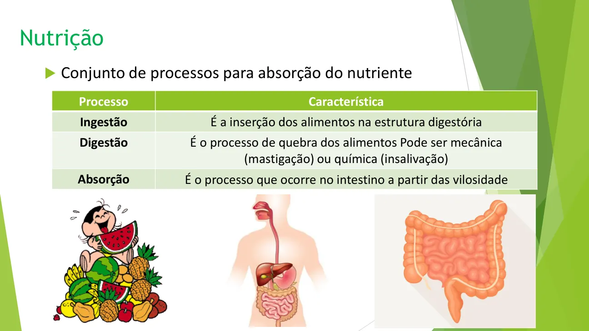
Imagem do PDF original · Aula 02, slide 5
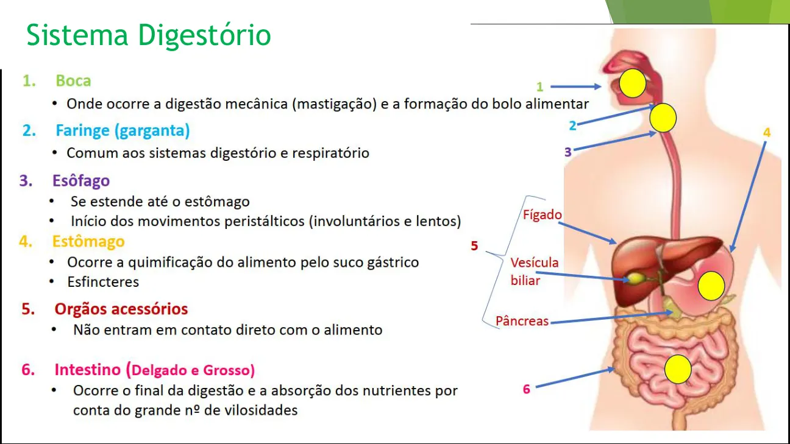
Imagem do PDF original · Aula 02, slide 6
💡 Curiosidade relacionada ao tópico: O intestino delgado é o principal local de absorção de nutrientes, apesar de o estômago frequentemente receber mais atenção em desenhos.
📌 Para lembrar: Ingestão não é digestão; digestão não é absorção. Cada processo tem uma função.
📝 Agora é sua vez
2 atividades
Marque a alternativa e clique em Conferir alternativa. O feedback e a resolução aparecem imediatamente. Você também pode abrir o gabarito manualmente.
Autoral · estilo ENEM/vestibular · Questão 13
Questão 13. Um paciente apresenta redução acentuada da produção de enzimas pancreáticas. A deficiência de lipase pancreática prejudica principalmente a digestão de:
🔽 Ver gabarito comentado
Gabarito: alternativa C. Lipases participam da hidrólise de lipídios, especialmente triglicerídeos.
Do material original · Aula 02, slide 33 · Questão 46
Questão 46. Segundo observações médicas, o cigarro tem ação nociva em órgãos do aparelho digestório. A gastrite pode evoluir para úlcera. Na figura apresentada, qual número identifica o órgão onde ocorre a gastrite?
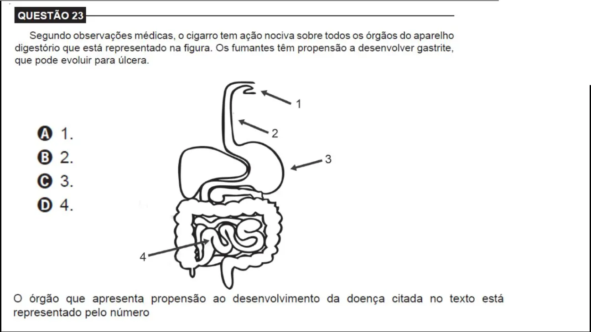
Figura da questão apresentada no slide original.🔽 Ver gabarito comentado
Gabarito: alternativa C. O número 3 na figura indica o estômago, órgão cuja mucosa é inflamada na gastrite.
🫙
Fígado, vesícula biliar e pâncreas
Aula 02 · Tópico 16
📖 Aula 02 · slide 7
Órgãos que ajudam a digestão mesmo quando o alimento não passa por dentro deles.
Fígado
Participa do metabolismo de carboidratos, proteínas e lipídios; armazena glicogênio; sintetiza proteínas plasmáticas e produz bile.
Vesícula biliar
Armazena e concentra a bile produzida pelo fígado, liberando-a no intestino delgado conforme a necessidade. Os sais biliares ajudam a emulsificar gorduras, isto é, dispersá-las em gotículas menores para facilitar a ação enzimática.
Pâncreas
Produz enzimas digestivas, como amilase (atua sobre carboidratos) e lipase (atua sobre gorduras), além de bicarbonato. Também exerce função endócrina ao produzir insulina e glucagon.
Atenção: a bile não é enzima. Ela facilita a digestão de lipídios por um mecanismo físico-químico.
Na vida real: a vesícula pode ser retirada cirurgicamente; o fígado continua produzindo bile, embora o armazenamento e a liberação sejam modificados.
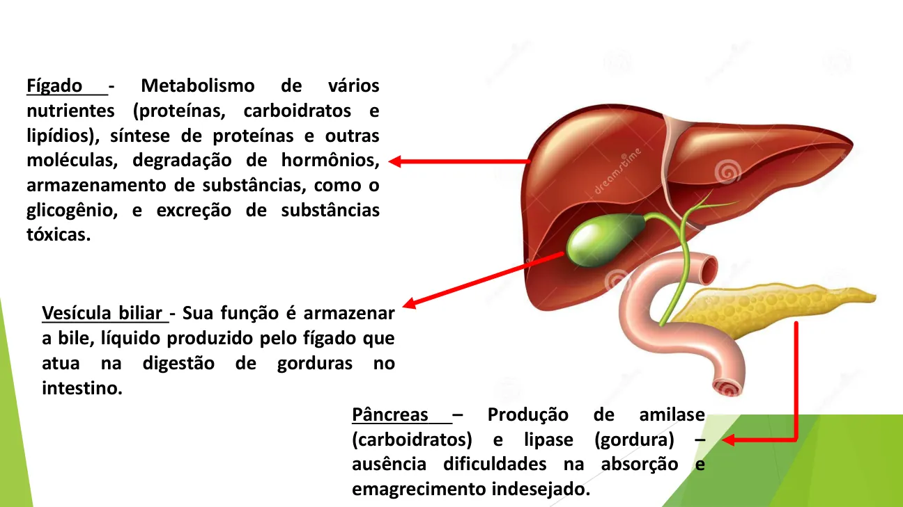
Imagem do PDF original · Aula 02, slide 7
💡 Curiosidade relacionada ao tópico: O pâncreas participa de dois sistemas estudados nestes slides: digestório e endócrino.
Os alvéolos pulmonares são pequenas estruturas envolvidas por capilares sanguíneos. Neles ocorre a hematose, ou seja, a troca de gases entre o ar alveolar e o sangue.
O oxigênio (O₂) tende a passar dos alvéolos para o sangue; o gás carbônico (CO₂) realiza o caminho inverso. Essas passagens acontecem por difusão, devido a diferenças de pressões parciais.
Por que a respiração aumenta no exercício?
Durante a atividade física, a demanda energética e a produção de CO₂ pelos tecidos aumentam. O organismo ajusta a ventilação e a circulação para manter o equilíbrio.
Na vida real: ao subir uma escada correndo, a frequência respiratória aumenta para acompanhar as necessidades metabólicas.
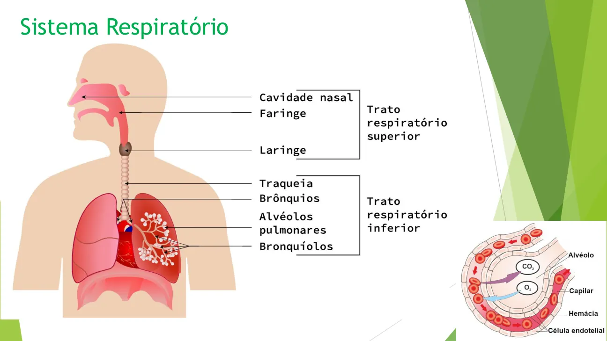
Imagem do PDF original · Aula 02, slide 8
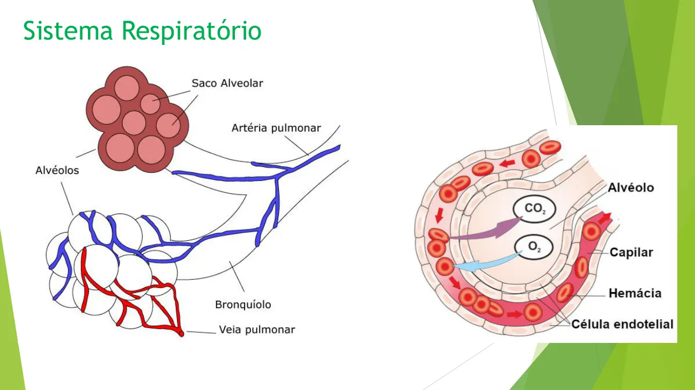
Imagem do PDF original · Aula 02, slide 9
Imagem complementar online · Trocas gasosas no alvéolo · Alexa Crookston, CC BY-SA (Pressbooks)
💡 Curiosidade relacionada ao tópico: A maior parte do oxigênio transportado no sangue está ligada à hemoglobina das hemácias, e não simplesmente dissolvida no plasma.
📌 Para lembrar: Hematose ocorre principalmente nos alvéolos por difusão.
📝 Agora é sua vez
2 atividades
Marque a alternativa e clique em Conferir alternativa. O feedback e a resolução aparecem imediatamente. Você também pode abrir o gabarito manualmente.
Autoral · estilo ENEM/vestibular · Questão 14
Questão 14. Em uma pessoa saudável, o oxigênio presente nos alvéolos pulmonares atravessa uma superfície muito fina e chega aos capilares sanguíneos. O mecanismo responsável é:
🔽 Ver gabarito comentado
Gabarito: alternativa C. O oxigênio atravessa a barreira alvéolo-capilar por difusão, devido à diferença de pressão parcial.
Autoral · lista complementar · Questão 34
Questão 34. Durante a hematose pulmonar, ocorrem trocas entre o ar dos alvéolos e o sangue. Nesse processo:
🔽 Ver gabarito comentado
Gabarito: alternativa B. O oxigênio difunde-se dos alvéolos para o sangue, enquanto o CO₂ difunde-se do sangue para o ar alveolar.
❤️
Sistema cardiovascular e circulação
Aula 02 · Tópico 18
📖 Aula 02 · slides 10 e 11
Um sistema de transporte que leva gases e nutrientes a todo o corpo.
O que o sangue transporta?
O sistema cardiovascular envolve coração, vasos sanguíneos e sangue. Transporta oxigênio, nutrientes, hormônios e resíduos metabólicos.
Artérias conduzem sangue para fora do coração. Veias conduzem sangue em direção ao coração. Capilares permitem trocas com os tecidos.
Circulação sistêmica: ventrículo esquerdo → aorta → tecidos do corpo → veias cavas → átrio direito.
As artérias pulmonares transportam sangue relativamente pobre em oxigênio; as veias pulmonares transportam sangue oxigenado. Portanto, “artéria” e “veia” são classificações pela direção do fluxo, não pelo teor de oxigênio.
Na vida real: durante uma corrida, o coração acelera e aumenta o fluxo sanguíneo para atender às necessidades dos músculos.
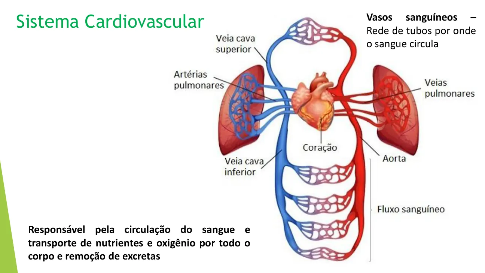
Imagem do PDF original · Aula 02, slide 10
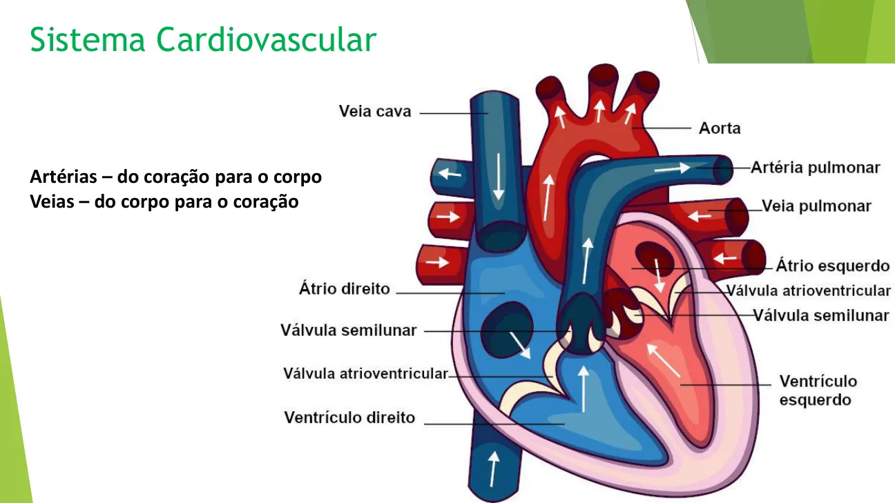
Imagem do PDF original · Aula 02, slide 11
💡 Curiosidade relacionada ao tópico: Apesar de ser chamado de “artéria”, o vaso que vai do coração aos pulmões transporta sangue pobre em oxigênio.
📌 Para lembrar: Artéria sai do coração; veia retorna ao coração.
📝 Agora é sua vez
2 atividades
Marque a alternativa e clique em Conferir alternativa. O feedback e a resolução aparecem imediatamente. Você também pode abrir o gabarito manualmente.
Autoral · estilo ENEM/vestibular · Questão 15
Questão 15. Um estudante afirmou que todas as artérias transportam sangue rico em oxigênio e todas as veias sangue pobre em oxigênio. A afirmação está incorreta porque:
🔽 Ver gabarito comentado
Gabarito: alternativa C. As artérias saem do coração e as veias chegam ao coração, independentemente do conteúdo de oxigênio.
Autoral · lista complementar · Questão 35
Questão 35. O sangue que retorna dos tecidos do corpo pelas veias cavas chega inicialmente:
🔽 Ver gabarito comentado
Gabarito: alternativa D. As veias cavas desembocam no átrio direito do coração.
💧
Sistema urinário e formação da urina
Aula 02 · Tópico 19
📖 Aula 02 · slides 12 e 13
Os rins não são apenas filtros: ajudam a controlar a composição do meio interno.
Quais são os órgãos?
Rins: produzem urina e ajudam a regular água, sais e pressão arterial.
Ureteres: conduzem urina dos rins até a bexiga.
Bexiga: armazena temporariamente a urina.
Uretra: conduz a urina para o exterior.
O néfron
O néfron é a unidade funcional do rim. Ele realiza etapas fundamentais da formação da urina:
Filtração glomerular: água e pequenas substâncias do plasma passam ao espaço filtrante.
Reabsorção tubular: água e substâncias úteis retornam ao sangue.
Secreção tubular: algumas substâncias são transportadas do sangue para o fluido tubular.
A urina final contém água e resíduos, como a ureia. Em condições normais, praticamente toda a glicose filtrada é reabsorvida.
Na vida real: ao ingerir mais água, os rins podem eliminar urina mais diluída. O hormônio ADH participa do controle da reabsorção de água.
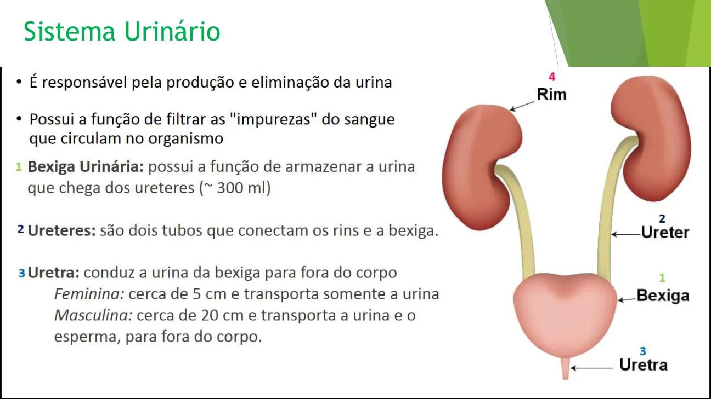
Imagem do PDF original · Aula 02, slide 12
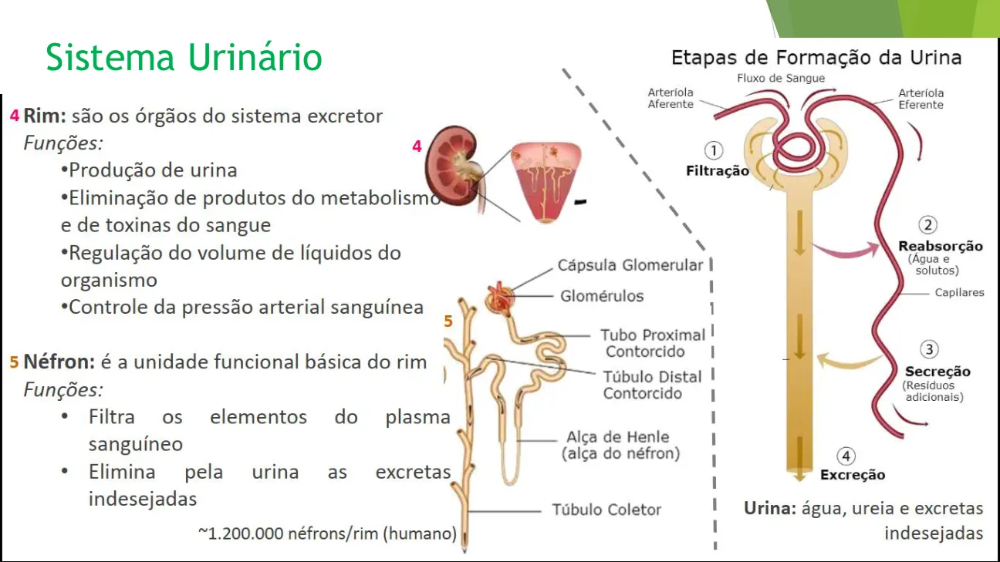
Imagem do PDF original · Aula 02, slide 13
💡 Curiosidade relacionada ao tópico: Os rins também produzem eritropoietina, hormônio relacionado à formação de hemácias.
📌 Para lembrar: Filtração, reabsorção e secreção são três etapas diferentes da produção de urina.
📝 Agora é sua vez
2 atividades
Marque a alternativa e clique em Conferir alternativa. O feedback e a resolução aparecem imediatamente. Você também pode abrir o gabarito manualmente.
Autoral · estilo ENEM/vestibular · Questão 16
Questão 16. Uma pessoa apresenta perda excessiva de água pela urina devido à redução da ação do hormônio antidiurético (ADH). Esse hormônio normalmente contribui para:
🔽 Ver gabarito comentado
Gabarito: alternativa B. O ADH favorece a reabsorção de água nos rins e ajuda a concentrar a urina.
Autoral · lista complementar · Questão 36
Questão 36. O néfron participa da formação da urina. O processo pelo qual substâncias úteis retornam do filtrado tubular para o sangue é denominado:
🔽 Ver gabarito comentado
Gabarito: alternativa B. Na reabsorção tubular, água e substâncias aproveitáveis retornam à circulação.
⚡
Sistema nervoso e respostas do corpo
Aula 02 · Tópico 20
📖 Aula 02 · slides 14 e 15
Como percebemos o ambiente e reagimos em frações de segundo?
Neurônios e sinais nervosos
Neurônios são células especializadas na recepção e na transmissão de sinais. Utilizam fenômenos elétricos e químicos para comunicar informações.
O sistema nervoso central compreende encéfalo e medula espinal. O sistema nervoso periférico inclui nervos e gânglios fora do central.
Sistema somático e autônomo
O somático participa do controle de movimentos voluntários. O autônomo regula muitas funções involuntárias, como frequência cardíaca, secreções e movimentos do tubo digestório.
Simpático
Parassimpático
Participa da resposta de alerta
Favorece várias funções de repouso e digestão
Pode acelerar os batimentos cardíacos
Pode reduzir a frequência cardíaca
Pode dilatar pupilas
Pode contrair pupilas
Arco reflexo
Ao encostar em uma superfície muito quente, circuitos da medula espinal podem desencadear uma retirada rápida da mão, enquanto a informação sensorial segue também para o encéfalo.
A bainha de mielina presente em muitos axônios pode aumentar a velocidade de condução dos impulsos nervosos.
Na vida real: durante um susto, pupilas e batimentos cardíacos podem mudar, mesmo sem uma decisão consciente.
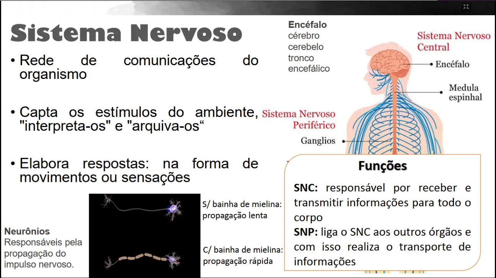
Imagem do PDF original · Aula 02, slide 14
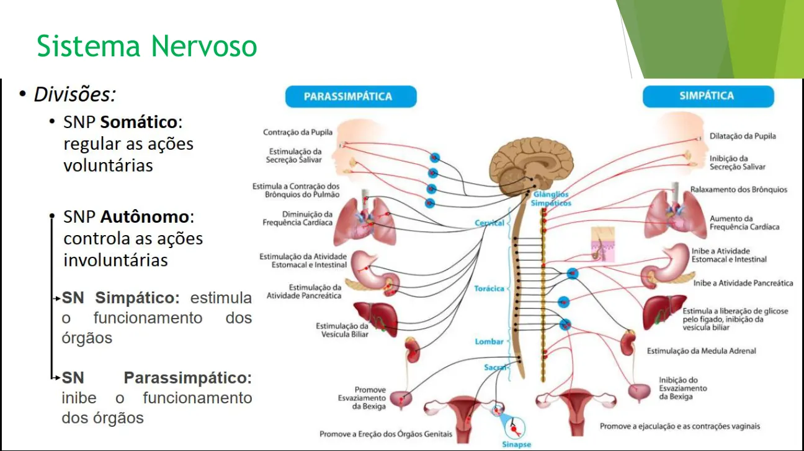
Imagem do PDF original · Aula 02, slide 15
💡 Curiosidade relacionada ao tópico: Reflexos rápidos podem ser integrados na medula antes da percepção consciente da dor.
📌 Para lembrar: SNC processa e integra informações; SNP conecta o SNC a estruturas do corpo.
📝 Agora é sua vez
2 atividades
Marque a alternativa e clique em Conferir alternativa. O feedback e a resolução aparecem imediatamente. Você também pode abrir o gabarito manualmente.
Autoral · estilo ENEM/vestibular · Questão 17
Questão 17. Uma pessoa toca em uma superfície muito quente e retira rapidamente a mão, antes mesmo de perceber conscientemente a intensidade da dor. Isso ocorre porque:
🔽 Ver gabarito comentado
Gabarito: alternativa B. O arco reflexo pode desencadear uma resposta motora rápida por circuitos medulares; a informação também segue para o encéfalo.
Autoral · lista complementar · Questão 37
Questão 37. Em uma situação de perigo, uma pessoa apresenta aumento da frequência cardíaca e dilatação das pupilas. Essas respostas estão relacionadas principalmente ao sistema nervoso:
🔽 Ver gabarito comentado
Gabarito: alternativa C. O sistema simpático participa das respostas de alerta e pode produzir esses efeitos.
🧠
Sistema endócrino: comunicação hormonal
Aula 02 · Tópico 21
📖 Aula 02 · slide 16
Nem toda comunicação do corpo acontece por nervos: os hormônios também enviam mensagens.
O que são hormônios?
São mensageiros químicos liberados por células ou glândulas, que atuam em outras células com receptores adequados. O sistema endócrino ajuda a coordenar metabolismo, crescimento, reprodução e respostas ao ambiente.
Um hormônio pode ser produzido em pequena quantidade e provocar efeitos importantes. Os sistemas nervoso e endócrino trabalham em conjunto.
Pâncreas e glicemia
A insulina, produzida por células beta do pâncreas, favorece a utilização e o armazenamento da glicose e ajuda a diminuir a glicemia. O glucagon, produzido por células alfa, ajuda a disponibilizar glicose, principalmente durante o jejum.
Após uma refeição: aumenta a glicemia → aumenta a secreção de insulina → tecidos utilizam/armazenam glicose.
Durante o jejum: o glucagon favorece a liberação de glicose pelo fígado.
Na vida real: o pâncreas tem função endócrina, ao liberar hormônios no sangue, e função exócrina, ao liberar enzimas digestivas no intestino.
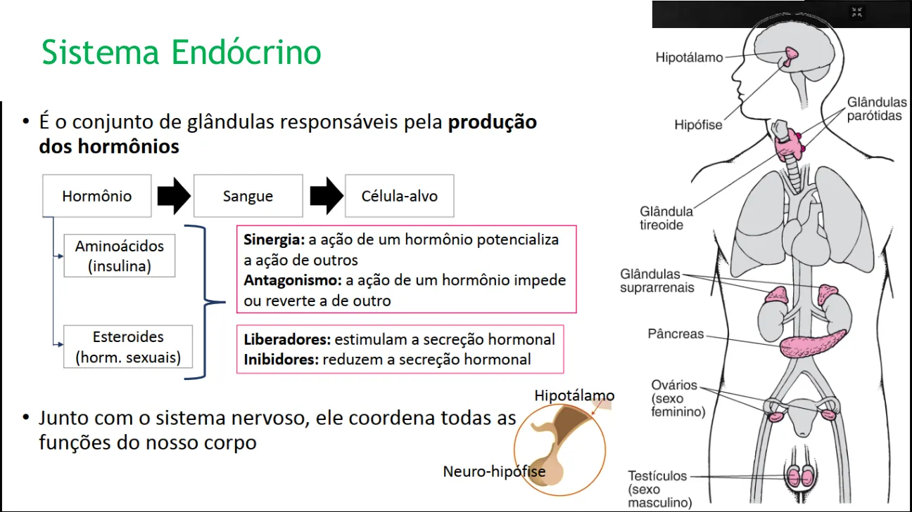
Imagem do PDF original · Aula 02, slide 16
💡 Curiosidade relacionada ao tópico: Dois hormônios produzidos pelo mesmo órgão podem ter funções opostas no controle da glicose sanguínea.
📌 Para lembrar: Hormônios são mensageiros; insulina tende a reduzir e glucagon tende a elevar a glicemia.
📝 Agora é sua vez
1 atividades
Marque a alternativa e clique em Conferir alternativa. O feedback e a resolução aparecem imediatamente. Você também pode abrir o gabarito manualmente.
Autoral · estilo ENEM/vestibular · Questão 18
Questão 18. Após uma refeição rica em carboidratos, a glicemia aumenta. Qual hormônio ajuda a reduzir esse aumento favorecendo o uso e o armazenamento de glicose?
🔽 Ver gabarito comentado
Gabarito: alternativa C. A insulina é produzida pelas células beta do pâncreas e participa da regulação da glicemia após as refeições.
🧠
Hipófise, tireoide, paratireoides e timo
Aula 02 · Tópico 22
📖 Aula 02 · slides 17 e 18
Conheça glândulas endócrinas importantes e as funções destacadas nos slides.
Hipófise
Produz e libera hormônios que atuam em diferentes órgãos. Entre os citados nos slides estão TSH (estimula a tireoide), ACTH (estimula o córtex da suprarrenal), FSH e LH (atuam nas gônadas).
A hipófise atua sob influência do hipotálamo, que integra informações nervosas e endócrinas. A neuro-hipófise libera hormônios produzidos no hipotálamo, como ADH e ocitocina.
Tireoide
Produz T3 e T4, hormônios relacionados à regulação do metabolismo, ao crescimento e a diversas funções corporais. A hipófise regula sua atividade por meio do TSH.
Paratireoides
Produzem PTH (paratormônio), importante na regulação da concentração de cálcio no sangue.
Timo
Órgão importante para a maturação de determinados linfócitos, especialmente durante as primeiras fases da vida. O slide cita hormônios tímicos relacionados a esse desenvolvimento.
Na vida real: hormônios tireoidianos participam do metabolismo, por isso alterações de sua produção podem modificar energia, temperatura corporal e outras funções.
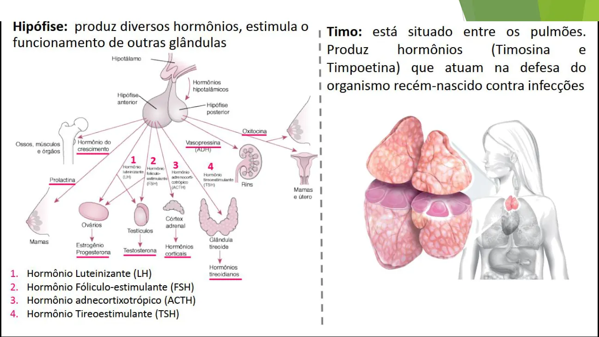
Imagem do PDF original · Aula 02, slide 17
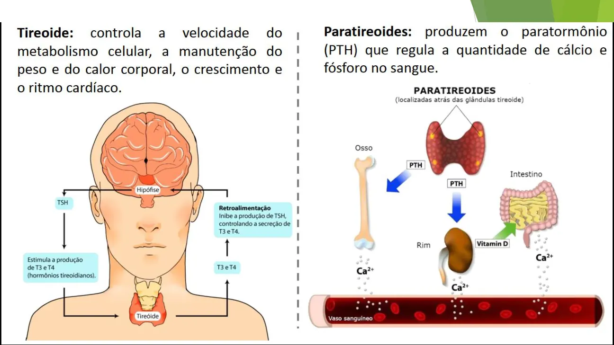
Imagem do PDF original · Aula 02, slide 18
💡 Curiosidade relacionada ao tópico: O TSH não é produzido pela tireoide: ele vem da hipófise e estimula a tireoide.
📌 Para lembrar: Associe cada glândula à sua principal função e não confunda o órgão estimulador com o órgão estimulado.
📝 Agora é sua vez
2 atividades
Marque a alternativa e clique em Conferir alternativa. O feedback e a resolução aparecem imediatamente. Você também pode abrir o gabarito manualmente.
Autoral · lista complementar · Questão 38
Questão 38. Uma pessoa apresenta redução da produção dos hormônios tireoidianos T3 e T4. Essa diminuição pode estar relacionada:
🔽 Ver gabarito comentado
Gabarito: alternativa A. T3 e T4 ajudam a regular o metabolismo; sua diminuição pode reduzir a atividade metabólica.
Autoral · fixação adicional · Questão 56
Questão 56. O hormônio TSH, que estimula a atividade da tireoide, é secretado principalmente pela:
🔽 Ver gabarito comentado
Gabarito: alternativa B. O TSH é produzido na adeno-hipófise e estimula a tireoide.
🌡️
Suprarrenais e glândulas sexuais
Aula 02 · Tópico 23
📖 Aula 02 · slides 19 a 22
Alguns hormônios preparam o corpo para agir; outros regulam reprodução e desenvolvimento.
Suprarrenais
Ficam sobre os rins. O córtex produz, entre outros, cortisol, relacionado ao metabolismo e à resposta ao estresse, e aldosterona, envolvida no equilíbrio de sódio, potássio e água.
A medula suprarrenal libera adrenalina e noradrenalina, substâncias que participam de respostas a situações de alerta, podendo alterar batimentos cardíacos e circulação.
Ovários e testículos
São gônadas, responsáveis pela produção de gametas e de hormônios sexuais. Os testículos produzem espermatozoides e testosterona. Os ovários produzem ovócitos e hormônios como estrógenos e progesterona.
O estradiol participa do desenvolvimento de características sexuais secundárias e da regulação do ciclo menstrual. A progesterona participa da preparação e manutenção do endométrio em determinadas fases do ciclo e na gestação.
Na vida real: o coração pode acelerar durante um susto pela ação integrada do sistema nervoso simpático e das catecolaminas, como a adrenalina.
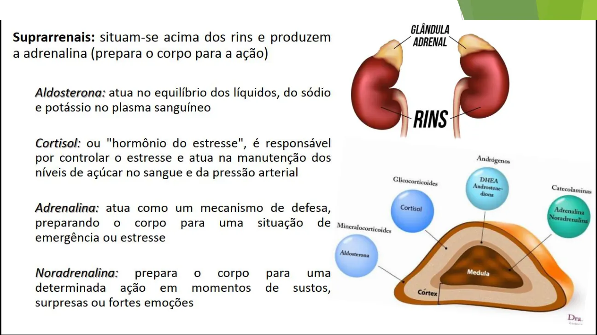
Imagem do PDF original · Aula 02, slide 19
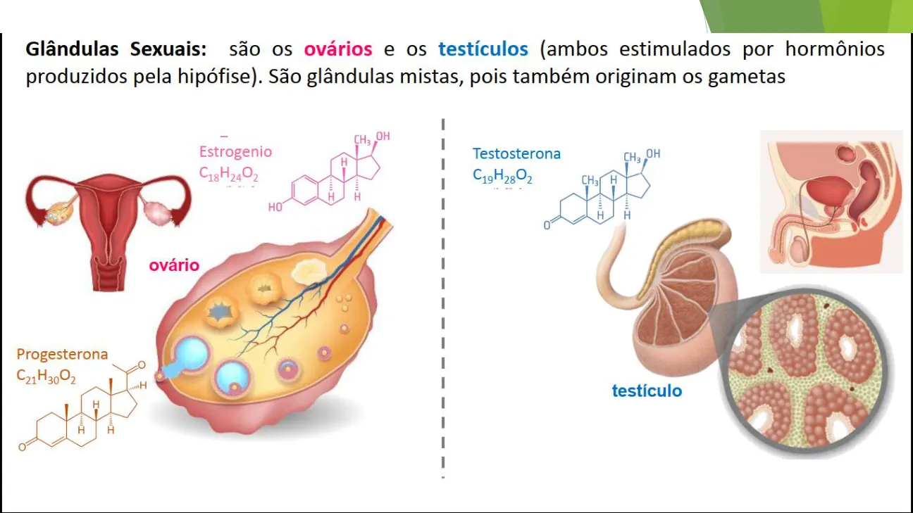
Imagem do PDF original · Aula 02, slide 20
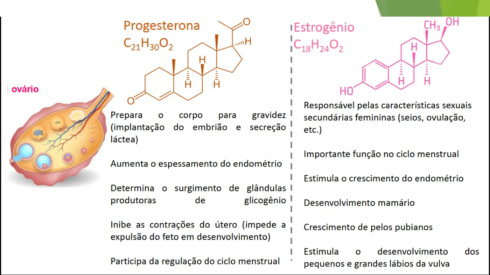
Imagem do PDF original · Aula 02, slide 22
💡 Curiosidade relacionada ao tópico: As suprarrenais ficam sobre os rins, mas têm funções diferentes das funções de filtração exercidas pelos rins.
📌 Para lembrar: Cortisol e aldosterona vêm do córtex suprarrenal; adrenalina e noradrenalina, principalmente da medula.
📝 Agora é sua vez
1 atividades
Marque a alternativa e clique em Conferir alternativa. O feedback e a resolução aparecem imediatamente. Você também pode abrir o gabarito manualmente.
Autoral · fixação adicional · Questão 53
Questão 53. Durante um susto intenso, uma substância liberada principalmente pela medula das suprarrenais pode contribuir para acelerar os batimentos cardíacos. Essa substância é:
🔽 Ver gabarito comentado
Gabarito: alternativa B. A adrenalina atua em respostas de alerta. A medula suprarrenal a libera na circulação.
👶
Sistema reprodutor humano
Aula 02 · Tópico 24
📖 Aula 02 · slide 25
Conheça os órgãos e a função dos gametas antes de estudar o ciclo menstrual.
Produção dos gametas
Os testículos produzem espermatozoides; os ovários produzem células reprodutivas que participam do processo de formação do óvulo. Gametas humanos típicos apresentam 23 cromossomos.
Na fecundação, ocorre união das contribuições genéticas materna e paterna, originando o zigoto, normalmente com 46 cromossomos.
Órgãos reprodutivos
O sistema masculino inclui testículos, epidídimos, canais deferentes, glândulas acessórias e pênis. O sistema feminino inclui ovários, tubas uterinas, útero e vagina, além da genitália externa.
O útero pode receber o embrião, que se implanta no endométrio. A tuba uterina é o local em que a fecundação geralmente ocorre.
Na vida real: o ciclo ovariano e o ciclo uterino são coordenados por hormônios — a preparação do endométrio ocorre mesmo quando não há fecundação.
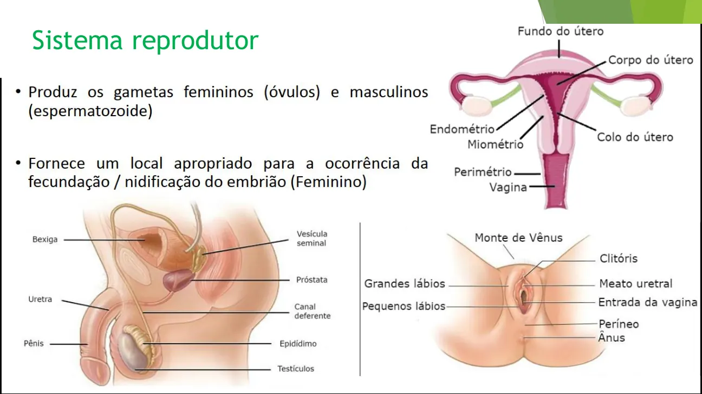
Imagem do PDF original · Aula 02, slide 25
💡 Curiosidade relacionada ao tópico: Ovulação é a liberação de um ovócito secundário, frequentemente chamado de “óvulo” em materiais introdutórios.
📌 Para lembrar: Gametas carregam metade do número típico de cromossomos das células somáticas humanas.
📝 Agora é sua vez
2 atividades
Marque a alternativa e clique em Conferir alternativa. O feedback e a resolução aparecem imediatamente. Você também pode abrir o gabarito manualmente.
Autoral · fixação adicional · Questão 54
Questão 54. Na espécie humana, a fecundação geralmente ocorre em qual estrutura do sistema reprodutor feminino?
🔽 Ver gabarito comentado
Gabarito: alternativa C. A fecundação geralmente ocorre na tuba uterina; posteriormente, o embrião pode chegar ao útero e implantar-se.
Autoral · fixação adicional · Questão 55
Questão 55. Na espécie humana, o número típico de cromossomos em um espermatozoide é:
🔽 Ver gabarito comentado
Gabarito: alternativa A. Os gametas são haploides e apresentam 23 cromossomos, metade do número típico das células somáticas humanas.
📈
Ciclo menstrual: lendo os gráficos
Aula 02 · Tópico 25
📖 Aula 02 · slides 23 e 24
Como as concentrações hormonais se modificam ao longo de um ciclo?
O que é ciclo menstrual?
É o intervalo contado a partir do primeiro dia de uma menstruação até o dia anterior ao início da seguinte. Os slides usam o exemplo didático de 28 dias, mas o ciclo não precisa ter exatamente essa duração.
Etapas principais
Etapa
O que ocorre
Menstruação
Eliminação de parte do endométrio, quando não há gestação em curso
Fase folicular
Desenvolvimento de folículos ovarianos e, em geral, elevação do estradiol
Ovulação
Pico de LH contribui para a liberação do ovócito
Fase lútea
Corpo lúteo secreta progesterona, que atua no endométrio
O FSH ajuda a estimular os folículos; o LH participa do desencadeamento da ovulação; o estradiol estimula o crescimento do endométrio; a progesterona participa de sua manutenção após a ovulação.
Como interpretar o gráfico?
Nos slides, o pico alto e estreito de LH marca o período próximo à ovulação. A progesterona aumenta principalmente depois da ovulação, durante a fase lútea.
Menarca é a primeira menstruação. Menopausa marca o fim definitivo dos ciclos menstruais devido à perda da atividade folicular ovariana.
Na vida real: a ovulação não ocorre obrigatoriamente no 14º dia. Por isso, contar datas não é método confiável para evitar gravidez.
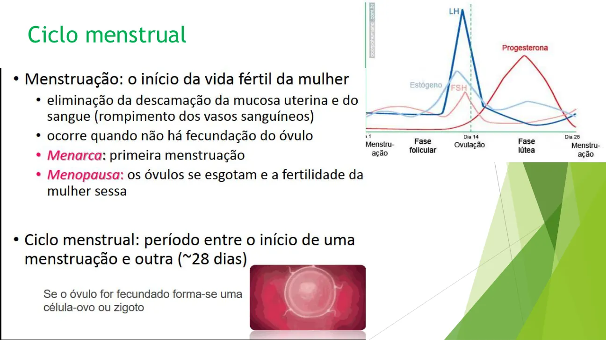
Imagem do PDF original · Aula 02, slide 23
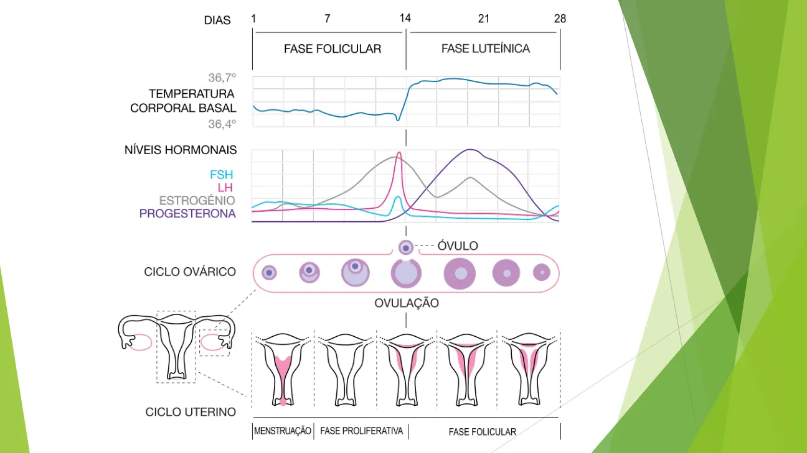
Imagem do PDF original · Aula 02, slide 24
💡 Curiosidade relacionada ao tópico: A temperatura corporal basal costuma aumentar discretamente após a ovulação, influenciada pela progesterona.
📌 Para lembrar: Para resolver gráficos menstruais, localize primeiro o pico de LH e depois observe o aumento da progesterona.
📝 Agora é sua vez
3 atividades
Marque a alternativa e clique em Conferir alternativa. O feedback e a resolução aparecem imediatamente. Você também pode abrir o gabarito manualmente.
Autoral · estilo ENEM/vestibular · Questão 19
Questão 19. Durante o ciclo menstrual, um aumento acentuado da concentração de LH está diretamente relacionado:
🔽 Ver gabarito comentado
Gabarito: alternativa B. O pico de LH é fundamental para eventos que culminam na ovulação.
Autoral · lista complementar · Questão 39
Questão 39. O gráfico do ciclo menstrual mostra um pico de LH próximo à ovulação. Qual acontecimento está diretamente associado a esse pico?
🔽 Ver gabarito comentado
Gabarito: alternativa B. O pico de LH contribui para a ovulação.
Do material original · Aula 02, slide 30 · Questão 43
Questão 43. Uma mulher com ciclo menstrual regular de 30 dias menstruou no dia 1º de janeiro. Ela está planejando engravidar. Em qual dos períodos indicados teria, em um modelo didático, mais chances de conseguir engravidar?
🔽 Ver gabarito comentado
Gabarito: alternativa B. Num ciclo regular de 30 dias, a ovulação pode ser estimada perto do 16º dia. Entre as opções, 14 a 16 de janeiro fica mais próximo do período de maior fertilidade; a data real pode variar.
🛡️
Infecções sexualmente transmissíveis
Aula 02 · Tópico 26
📖 Aula 02 · slide 26
Uma infecção pode ser transmitida mesmo quando a pessoa não apresenta sintomas.
Por que se diz IST e não apenas DST?
O termo IST (infecção sexualmente transmissível) enfatiza que alguém pode estar infectado sem apresentar sinais ou sintomas. Diferentes microrganismos podem ser transmitidos principalmente por contato sexual, e alguns também por outras vias.
Infecção
Agente
Destaque
HIV
Vírus
Ataca células do sistema imunológico
HPV
Vírus
Certos tipos podem causar lesões e cânceres
Sífilis
Bactéria
Tem tratamento e cura com antibiótico adequado
Gonorreia
Bactéria
Pode comprometer diferentes tecidos
Clamídia
Bactéria
Pode não causar sintomas
Herpes genital
Vírus
Pode provocar lesões recorrentes
HIV é a mesma coisa que aids?
Não. HIV é o vírus; aids é uma síndrome que pode aparecer em estágio avançado da infecção quando há comprometimento importante da imunidade. O tratamento antirretroviral pode impedir essa progressão.
A prevenção envolve medidas adequadas ao tipo de infecção, como vacinação contra HPV, uso de preservativos, testes e assistência em saúde.
Na vida real: a vacina contra HPV prepara o sistema imunológico antes de um possível contato com determinados tipos do vírus.
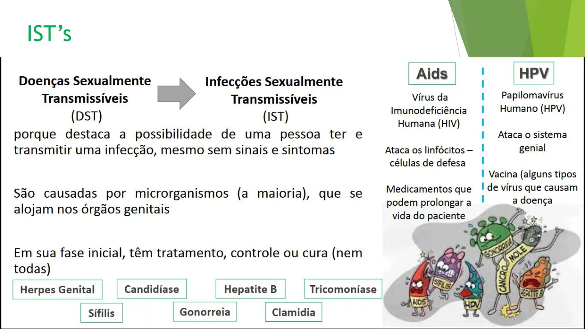
Imagem do PDF original · Aula 02, slide 26
💡 Curiosidade relacionada ao tópico: Algumas ISTs não produzem sintomas imediatamente; por isso o aspecto da pessoa não permite determinar se ela está infectada.
📌 Para lembrar: HIV e HPV são vírus diferentes; a vacinação contra HPV é uma medida preventiva.
📝 Agora é sua vez
5 atividades
Marque a alternativa e clique em Conferir alternativa. O feedback e a resolução aparecem imediatamente. Você também pode abrir o gabarito manualmente.
Autoral · estilo ENEM/vestibular · Questão 20
Questão 20. Uma campanha de saúde pública incentiva a vacinação contra o HPV antes do contato com o vírus. Sua finalidade principal é:
🔽 Ver gabarito comentado
Gabarito: alternativa C. A vacinação preventiva estimula o sistema imunológico a reconhecer os tipos de HPV abrangidos pela vacina.
Autoral · lista complementar · Questão 40
Questão 40. Uma pessoa infectada pelo HPV pode não apresentar sinais ou sintomas. O que podemos concluir?
🔽 Ver gabarito comentado
Gabarito: alternativa D. Uma IST pode existir e ser transmitida mesmo quando não há sintomas.
Do material original · Aula 02, slide 29 · Questão 42
Questão 42. A vacina utilizada na prevenção do câncer de colo do útero passou a ser oferecida gratuitamente pelo SUS. A vacina a que se refere o texto protege contra o(a):
🔽 Ver gabarito comentado
Gabarito: alternativa A. A vacina citada protege contra tipos do papilomavírus humano (HPV) associados a cânceres, incluindo o do colo do útero. O calendário de vacinação pode mudar com o tempo.
Do material original · Aula 02, slide 32 · Questão 45
Questão 45. Uma campanha de vacinação contra o HPV pretende proteger meninas antes do início da vida sexual. Qual é o benefício esperado dessa ação?
🔽 Ver gabarito comentado
Gabarito: alternativa D. A vacinação é preventiva e estimula resposta imune, incluindo produção de anticorpos, antes de uma possível exposição.
Do material original · Aula 02, slide 34 · Questão 47
Questão 47. A sífilis é uma infecção bacteriana sexualmente transmissível e pode produzir complicações quando não tratada. A transmissão sexual dessa doença é reduzida principalmente por:
🔽 Ver gabarito comentado
Gabarito: alternativa B. O preservativo reduz o risco de transmissão sexual. Diagnóstico e tratamento são importantes para controle da infecção, mas a questão pergunta especificamente uma medida de prevenção da transmissão.
💊
Métodos contraceptivos
Aula 02 · Tópico 27
📖 Aula 02 · slide 27
Como diferentes métodos reduzem a chance de gravidez — e quais também ajudam contra ISTs?
Categorias apresentadas nos slides
Tipo
Exemplos
Como atua principalmente
Barreira
Preservativos, diafragma
Dificultam o encontro dos gametas
Hormonais
Pílula, injetável, adesivo e alguns DIUs
Atuam sobre a ovulação e/ou outras etapas reprodutivas
Intrauterinos
DIU de cobre e sistemas hormonais
Reduzem a probabilidade de fecundação por mecanismos diferentes
Cirúrgicos
Vasectomia, laqueadura
Interrompem trajetos de gametas
Emergência
Contracepção de emergência
Usada após situações de risco, conforme o método
Qual ajuda a prevenir ISTs?
Preservativos internos e externos reduzem tanto o risco de gravidez quanto o de transmissão de diversas ISTs. Métodos como pílula, implante e DIU ajudam a prevenir gravidez, mas não substituem o preservativo para proteção contra ISTs.
O DIU de cobre não contém hormônios. Seu efeito envolve alterações locais que prejudicam a função dos espermatozoides e dificultam a fecundação.
Na vida real: a chamada dupla proteção combina um método de contracepção eficaz com preservativo para reduzir também o risco de ISTs.
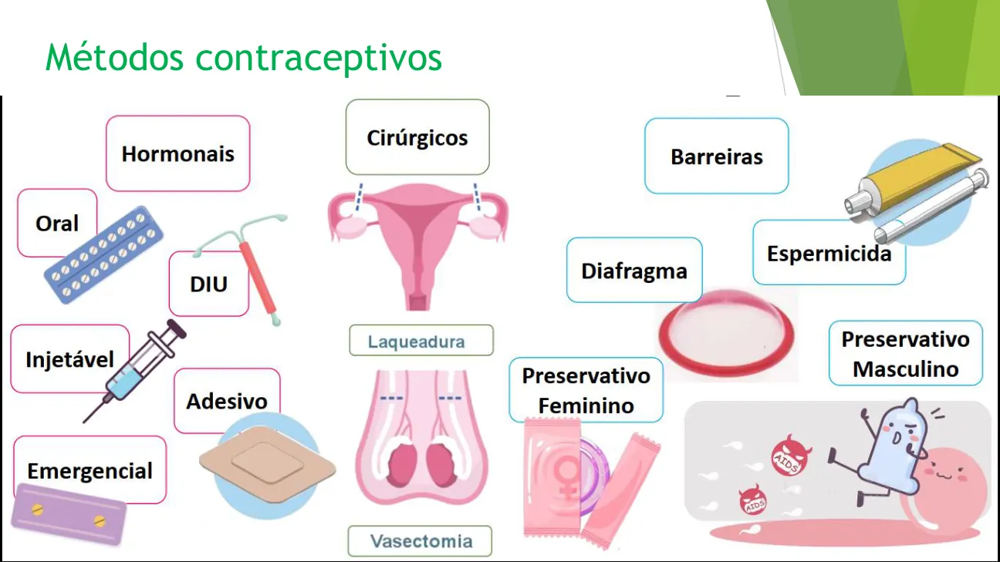
Imagem do PDF original · Aula 02, slide 27
💡 Curiosidade relacionada ao tópico: A contracepção de emergência não substitui o uso regular de um método e não oferece proteção contra ISTs.
📌 Para lembrar: Prevenção de gravidez e prevenção de ISTs não são a mesma coisa.
📝 Agora é sua vez
4 atividades
Marque a alternativa e clique em Conferir alternativa. O feedback e a resolução aparecem imediatamente. Você também pode abrir o gabarito manualmente.
Autoral · estilo ENEM/vestibular · Questão 21
Questão 21. Uma pessoa utiliza anticoncepcional hormonal oral para evitar gravidez, mas deseja também reduzir o risco de ISTs. A medida complementar mais adequada é:
🔽 Ver gabarito comentado
Gabarito: alternativa B. O preservativo reduz o risco de transmissão de diversas ISTs e também atua como contraceptivo.
Autoral · lista complementar · Questão 41
Questão 41. Um casal deseja reduzir a probabilidade de gravidez e também o risco de transmissão de ISTs. Entre os métodos apresentados, o mais adequado aos dois objetivos é:
🔽 Ver gabarito comentado
Gabarito: alternativa C. O preservativo reduz o risco de gravidez e de transmissão de diversas ISTs.
Do material original · Aula 02, slide 31 · Questão 44
Questão 44. As pílulas anticoncepcionais podem inibir a ovulação ou dificultar a passagem dos espermatozoides. Como não impedem o contato sexual e a transmissão de ISTs, recomenda-se associar a pílula ao uso de:
🔽 Ver gabarito comentado
Gabarito: alternativa B. O preservativo é o método apresentado que também reduz a transmissão sexual de vários agentes infecciosos.
Do material original · Aula 02, slide 35 · Questão 48
Questão 48. Existem diferentes métodos contraceptivos que também apresentam diferentes níveis de proteção contra ISTs. O método da lista que reduz o risco tanto de gravidez quanto de transmissão de ISTs é:
🔽 Ver gabarito comentado
Gabarito: alternativa B. O preservativo (camisinha) funciona como barreira e reduz o risco de gravidez e de várias ISTs.
✅
Gabarito rápido
56 questões
As explicações completas ficam logo abaixo de cada atividade. Aqui estão apenas as alternativas para correção geral.
Para o professor: use o botão “Modo professor” na barra superior para abrir ou fechar todas as resoluções. Para o aluno, cada questão permite selecionar uma alternativa, conferir e ler o comentário.
Os enunciados marcados “Do material original” foram recriados a partir das atividades dos slides de Biologia 02. Os demais são questões autorais de fixação, em estilo ENEM/vestibular, sem alegação de serem itens oficiais do ENEM. As imagens identificadas como “Imagem do PDF original” foram extraídas dos arquivos fornecidos. Imagens complementares online: Wikimedia Commons e Pressbooks — trocas gasosas. Se a internet estiver indisponível, o site utiliza as imagens locais do PDF como alternativa.